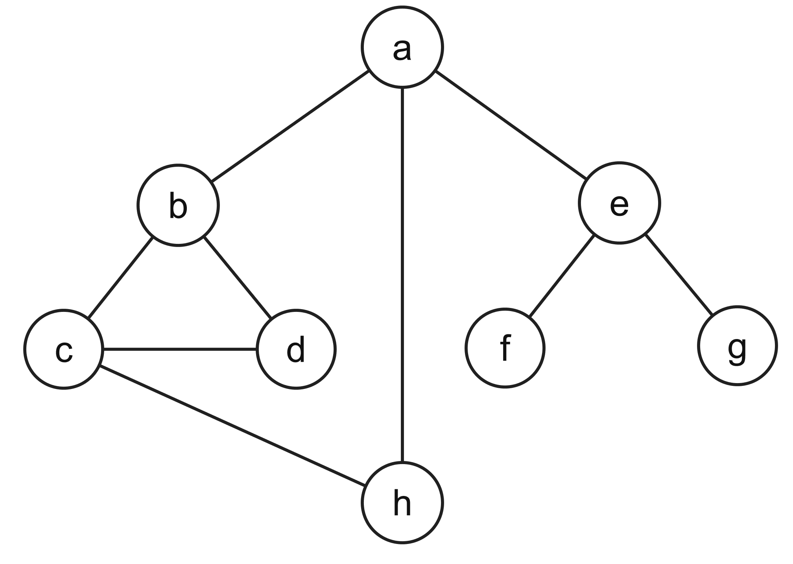
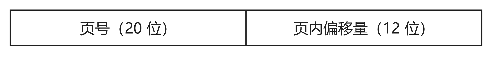
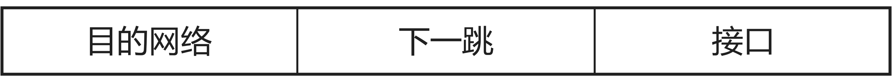

2013-01
线性表的链式表示算法和算法评价已知两个长度分别为 m 和 n 的升序链表，若将它们合并为一个长度为 m + n 的降序链表，则最坏情况下的时间复杂度是__。
答案：D
本题讲解：两个升序链表合并为降序链表的时间复杂度
第一步：明确合并要做的操作
要得到降序链表，最自然的做法是：同时扫描两个升序链表，每次比较两个表的当前头结点，把较小的那个结点摘下，用头插法插入新链表。头插会让先来的小元素不断被"压"向表尾方向，最终新链表恰好是降序。整个过程两个表的指针都只前进、不回退。
第二步：数一数最坏情况下的工作量
设两表长度分别为 m、n。最坏情况下两个链表都要走到头：
- 每次比较恰好"处理掉"一个结点，比较次数不超过 m + n − 1 次；
- m + n 个结点每个恰好被摘下、头插一次，共 m + n 次插链操作。
比较和插链都是对每个结点做常数时间的工作，总时间为 O(m + n)。而 m + n 与 max(m, n) 同阶（m + n ≤ 2·max(m, n)），所以答案选 D。
易错点
- 选 C（O(min(m, n))）或 A（O(n)）：误以为只需遍历较短的那个表。实际上最坏情况（两表元素交错减小）下每个结点都要被比较、链接一次，一个都不能少。
- 选 B（O(mn)）：把"归并"误解成两两交叉比较。归并中指针只前进不回退，根本不存在 m×n 量级的比较。
口诀：归并两个链表，每个结点只过一遍手，O(m + n) 与 O(max(m, n)) 同阶，选 D。
2013-02
栈一个栈的入栈序列为 1, 2, 3, …, n，其出栈序列是 p1, p2, p3, …, pn。若 p2 = 3，则 p3 可能取值的个数是__。
答案：C
本题讲解：p2 = 3 时 p3 可能取值的个数
第一步：p2 = 3 意味着什么
p2 = 3 说明 3 是第二个出栈的元素，那么 3 出栈的那一刻必须位于栈顶。入栈与出栈可以交错进行，据此先确定第一个出栈的 p1：
- p1 = 1：先入 1、出 1，再入 2、入 3、出 3，可行；
- p1 = 2：入 1、入 2、出 2，再入 3、出 3，可行；
- p1 = 4：入 1、2、3、4，出 4、出 3，可行；
- p1 = 3 不可能（3 是第二个出栈）；p1 ≥ 5 也不可能——4 还压在 3 上面，3 到不了栈顶。
所以 p1 只能取 1、2、4。
第二步：逐情形枚举 p3
- p1 = 1 情形：3 出栈后栈里剩 2，p3 可以取 2；也可以继续入栈后再出栈，p3 可以取 4, 5, …, n。
- p1 = 2 情形：3 出栈后栈里剩 1，p3 可以取 1；同样也可以取 4, 5, …, n。
- p1 = 4 情形：3 出栈后栈里剩 1、2（2 在顶），p3 可以取 2；也可以继续入栈后取 5, 6, …, n（4 已出栈，不可能再出）。
三种情形并起来：p3 ∈ {1, 2, 4, 5, …, n}，恰好是除 3 以外的全部值，共 n − 1 个，选 C。
易错点
- 漏掉 p1 = 4：以为 1、2、3 必须连续入栈。入栈出栈可交错，4 出栈后 3 恰好第二个出栈。
- 漏掉 p3 = 1 或 p3 = 2：忽略了 3 出栈后栈底还压着没出过的小元素，它们随时可以出栈。
- 误以为 p3 = 3：3 已经作为 p2 出栈，一个元素不可能出栈两次。
p2 = 3 时 p1 ∈ {1, 2, 4}；p3 可取除 3 以外的所有值，共 n − 1 个，选 C。
2013-03
树形查找若将关键字 1, 2, 3, 4, 5, 6, 7 依次插入到初始为空的平衡二叉树 T 中，则 T 中平衡因子为 0 的分支结点的个数是__。
答案：D
本题讲解：依次插入 1~7 建 AVL 树，数平衡因子为 0 的分支结点
第一步：逐个插入并处理旋转
平衡二叉树插入后若失衡，找最小失衡子树的根结点调整。本例插入 1~7 的过程：
| 插入 | 动作 | 插入后树形 |
|---|---|---|
| 1 | 成为根 | 1 |
| 2 | 接为 1 的右孩子，平衡 | 1（右 2） |
| 3 | 在 1 处 RR 型失衡，左旋 | 2 为根，孩子 1、3 |
| 4 | 接为 3 的右孩子，仍平衡 | — |
| 5 | 在 2 处 RR 型失衡，左旋 | 4 为根：左 2（孩子 1、3），右 5 |
| 6 | 接为 5 的右孩子，仍平衡 | — |
| 7 | 在 5 处 RR 型失衡，左旋 | 6 升为 4 的右孩子，孩子 5、7 |
最终树：根 4，左子树根 2（孩子 1、3），右子树根 6（孩子 5、7），是一棵满二叉树形态的 AVL 树。
第二步：数平衡因子为 0 的分支结点
分支结点指有孩子的结点，即 4、2、6 三个：
| 结点 | 左子树高 | 右子树高 | 平衡因子 |
|---|---|---|---|
| 4（根） | 2 | 2 | 0 |
| 2 | 1 | 1 | 0 |
| 6 | 1 | 1 | 0 |
平衡因子为 0 的分支结点共 3 个，选 D。
易错点
- 把叶子也数进去：题目问的是"分支结点"，1、3、5、7 是叶子结点，不参与计数。
- 旋转方向搞反：RR 型（右孩子的右侧插入导致失衡）做左旋，本例三次旋转全是左旋。
- 插入 6 后误判失衡：此时 4 的左右子树高度都是 2，全树平衡，不需要旋转。
插入 1~7 后得到满 AVL 树，4、2、6 三个分支结点的平衡因子全为 0，选 D。
2013-04
树与二叉树的应用已知三叉树 T 中 6 个叶结点的权分别是 2, 3, 4, 5, 6, 7，T 的带权（外部）路径长度最小是__。
答案：B
本题讲解：三叉哈夫曼树的最小带权路径长度
第一步：判断要不要补虚结点
三叉哈夫曼树每次合并消耗 3 个结点、生成 1 个新结点。要使每次合并都能凑满 3 个、每个分支结点都恰有 3 个孩子，需满足 (n − 1) 能被 (k − 1) 整除。这里 n = 6、k = 3：6-1=5，5 mod 2 = 1，不整除——若不处理，最后一次只剩 2 个结点合并，根就只有 2 个孩子。
所以补 1 个权值为 0 的虚结点，共 7 个权：0, 2, 3, 4, 5, 6, 7。
第二步：三叉哈夫曼构造（每次取最小的 3 个合并）
| 步骤 | 取出最小 3 权 | 新结点权 | 剩余集合 |
|---|---|---|---|
| 1 | 0, 2, 3 | 5 | 4, 5, 5, 6, 7 |
| 2 | 4, 5, 5 | 14 | 6, 7, 14 |
| 3 | 6, 7, 14 | 27（根） | — |
带权路径长度 WPL 等于所有非叶（合并产生）结点的权值之和：
WPL = 5 + 14 + 27 = 46，选 B。
验证：叶 6、7 在第 1 层，4、5 在第 2 层，0、2、3 在第 3 层，WPL = 6 + 7 + 4×2 + 5×2 + 0×3 + 2×3 + 3×3 = 46，一致。
易错点
- 不补虚结点直接合并：会得到根只有 2 个孩子的树（WPL = 36），不满足三叉树"分支结点恰有 3 个孩子"的构造要求——这也是选项里没有 36 的原因。
- 把根权 27 当答案：27 只是最后一次合并的权值，选项 A 就是这个陷阱。
- 忘记 0 权结点的作用：补的 0 被排到最深层、不贡献 WPL，但它保证了最后一层能凑满 3 个孩子。
(n − 1) mod (k − 1) ≠ 0 时先补权 0 虚结点；三叉哈夫曼的 WPL = 各次合并权值之和 = 46，选 B。
2013-05
二叉树的遍历和线索二叉树若 X 是后序线索二叉树中的叶结点，且 X 存在左兄弟结点 Y，则 X 的右线索指向的是__。
答案：A
本题讲解：后序线索二叉树中叶结点的右线索
第一步：确定 X 在树中的位置关系
X 是叶结点且存在左兄弟 Y，说明父结点有两个孩子：Y 是左孩子、X 是右孩子；X 没有任何孩子，它的左、右指针均为空，都可以用来存放线索。
第二步：按后序规则找 X 的后继
后序遍历顺序是"左 → 右 → 根"。访问 X 的时刻：
- X 是叶，自身无子树；
- 父结点的左子树（Y 及其后代）在 X 之前已全部访问完毕；
- X 是父结点的最后一个孩子，访问完 X 后，下一个要访问的就是父结点。
所以后序序列中 X 的直接后继是父结点。X 的右孩子指针为空，按线索规则正好填入后继——X 的右线索指向 X 的父结点，选 A。
易错点
- 选 C（X 的左兄弟 Y）：Y 恰是 X 的前驱——左兄弟子树整棵访问完后，最后访问的是子树根 Y 本身，它填入的是 X 的左线索，别把左右弄反。
- 选 B / D（以 Y 为根的子树的最左下 / 最右下结点）：Y 子树整体在 X 之前访问，其中任何结点都不可能是 X 的后继。
- 忽略"叶结点"这个前提：若 X 不是叶，右指针被孩子占用，根本不存在"右线索指向谁"的问题。
后序中"父结点的右孩子（叶）"的下一个访问者就是父结点，右线索指向父结点，选 A。
2013-06
树形查找在任意一棵非空二叉排序树 T1 中，删除某结点 v 之后形成二叉排序树 T2，再将 v 插入 T2 形成二叉排序树 T3。下列关于 T1 与 T3 的叙述中，正确的是__。
Ⅰ. 若 v 是 T1 的叶结点，则 T1 与 T3 不同
Ⅱ. 若 v 是 T1 的叶结点，则 T1 与 T3 相同
Ⅲ. 若 v 不是 T1 的叶结点，则 T1 与 T3 不同
Ⅳ. 若 v 不是 T1 的叶结点，则 T1 与 T3 相同
答案：C
本题讲解：BST 删除结点 v 再插入 v，T1 与 T3 是否相同
第一步：v 是叶结点的情形（判断 Ⅰ、Ⅱ）
二叉排序树删除叶结点就是直接摘掉，树的其余部分纹丝不动。再把 v 按排序规则插入：从根一路比较下来，比较路径与原来完全相同，必然走到原来那个空位，v 回到原位、仍是叶。所以 T3 与 T1 相同——Ⅱ 对，Ⅰ 错。
第二步：v 不是叶结点的情形（判断 Ⅲ、Ⅳ）
v 有孩子时，删除必须"找人顶位"：只有一个孩子，就让孩子直接顶替 v 的位置；有两个孩子，就用 v 的中序前驱（或后继）替补，再递归删除那个替补结点。无论哪种，v 原来的位置都被别的结点占据，树形已经改变。
再插入 v 时，新插入的结点只能落在空指针处，必然是叶。而 T1 中 v 是有孩子的分支结点——同一个关键字 v，在 T1 里有孩子、在 T3 里是叶，两棵树不可能相同。所以 T3 与 T1 不同——Ⅲ 对，Ⅳ 错。
综上，正确的是 Ⅱ、Ⅲ，选 C。
易错点
- 以为删了再插就"复原"：只有叶结点才复原；带孩子的结点删除时树形已动，插回的 v 成了叶，回不到原位。
- 忽略双孩子删除的连锁反应：用前驱/后继替补后还要递归删除替补结点，整棵子树都可能变形。
- 凭感觉选 Ⅳ：判断"两棵树相同"的最硬标准是逐结点比对——v 的孩子数在 T1、T3 中不同，就是"不同"的铁证。
v 是叶：删了再插原样复原；v 不是叶：删时变形、插回成叶，T3 ≠ T1，选 C。
2013-07
图的基本概念图的存储及基本操作设图的邻接矩阵 A 如下所示。各顶点的度依次是__。
答案：C
本题讲解：由邻接矩阵求各顶点的度
第一步：判断图的类型
矩阵 A 不对称：A[1][2] = 1 而 A[2][1] = 0。非对称邻接矩阵对应有向图。有向图中顶点的度 = 入度 + 出度，在矩阵上就是列的和（入度）+ 行的和（出度）。
第二步：逐顶点计算行和与列和
| 顶点 | 行和（出度） | 列和（入度） | 度 |
|---|---|---|---|
| 1 | 0+1+0+1 = 2 | 0+0+0+1 = 1 | 3 |
| 2 | 0+0+1+1 = 2 | 1+0+1+0 = 2 | 4 |
| 3 | 0+1+0+0 = 1 | 0+1+0+0 = 1 | 2 |
| 4 | 1+0+0+0 = 1 | 1+1+0+0 = 2 | 3 |
度依次为 3, 4, 2, 3，选 C。
自检：矩阵中共 6 个 1（6 条弧），各顶点度数之和 3+4+2+3 = 12 = 2×6，吻合。
易错点
- 当成无向图：无向图的邻接矩阵一定对称，度就等于行和，会误算出 2, 2, 1, 1（选项 B 的陷阱）。
- 只算出度：只看行和同样得到 2, 2, 1, 1，漏掉了入度。
- 行列看串：入度看的是列不是行，例如顶点 4 的入度来自顶点 1、2 指向它的两条弧。
非对称邻接矩阵 = 有向图；度 = 行和 + 列和，依次为 3, 4, 2, 3，选 C。
2013-08
图的遍历若对如下无向图进行遍历，则下列选项中，不是广度优先遍历序列的是__。

答案：D
本题讲解：判断哪一个不是广度优先遍历序列
第一步：整理图的结构
图 G 有 8 个顶点，边集：a-b、a-e、a-h、b-c、b-d、c-d、c-h、e-f、e-g。邻接表（按字母序）：
| 顶点 | 邻接点 |
|---|---|
| a | b, e, h |
| b | a, c, d |
| c | b, d, h |
| d | b, c |
| e | a, f, g |
| f | e |
| g | e |
| h | a, c |
第二步：BFS 序列的分层判定法
BFS 有条铁律：序列按"层号"非降排列。起点层号为 0；某顶点若只与已访问的层号 k 顶点相邻，它的层号就是 k+1；一个顶点出队时，必须把它所有的未访问邻居一口气访问完（它们同层、连续出现）。题目没给邻接表存储顺序，所以每个顶点的邻居按任意顺序访问都合法，判定只看结构。选项 A、B、C 都满足这一规律（层号依次为 0,1,1,2,2,2,3,3；0,1,1,1,2,2,3,3；0,1,1,2,2,3,4,4，均非降）。
第三步：检验选项 D
D = a, b, c, d, h, e, f, g。从 a 出发：a 的邻居 b、e、h 与 a 相邻，都应在第 1 层并紧跟 a 连续出现。但序列里 b 之后是 c——c 与 a 不相邻，属第 2 层；h 明明是 a 的邻居（第 1 层），却被挤到 d 之后才出现。层号序列 0,1,2,2,1,… 中途回落，违反 BFS 的先进先出分层规则。所以 D 不是广度优先遍历序列，选 D。
易错点
- 以为邻接顺序是固定的：判定 BFS 序列看图的连通结构，不背某个"标准答案序列"。
- 混淆 DFS 与 BFS：a, b, c, d, h 很像一条"扎到底"的深度优先路径，BFS 不允许这种走法。
- 只盯起点：即便开头合法，也要检查后面每个顶点的层号是否始终非降。
起点的全部邻居必须紧跟在起点后的同一层连续出现；D 把 h 推迟到 c、d 之后，违反分层规则，选 D。
2013-09
图的应用下列 AOE 网表示一项包含 8 个活动的工程。通过同时加快若干活动的进度可以缩短整个工程的工期。下列选项中，加快其进度就可以缩短工程工期的是

答案：C
本题讲解：AOE 网中同时加快哪些活动能缩短工期
第一步：求各事件最早发生时间与关键路径
按拓扑顺序计算事件最早发生时间 ve：
| 事件 | 计算 | ve |
|---|---|---|
| 1 | 源点 | 0 |
| 3 | ve(1) + b = 8 | 8 |
| 2 | max(a: 0+3, d: 8+4) | 12 |
| 4 | ve(2) + c = 12+9 | 21 |
| 5 | max(e: 12+6, f: 8+10) | 18 |
| 6 | max(g: 21+6, h: 18+9) | 27 |
工期为 27。长度等于 27 的路径有三条关键路径：b-d-c-g（1→3→2→4→6）、b-d-e-h（1→3→2→5→6）、b-f-h（1→3→5→6）。
第二步：逐项检验"同时加快"的选项
缩短工期的条件：每一条关键路径上都至少有一个被加快的活动，否则最长路径长度不变、工期不动。
- A（c 和 e）：只覆盖前两条，b-f-h 上没有 c、e，工期仍 27。错。
- B（d 和 c）：d 只在 b-d-c-g、b-d-e-h 上，b-f-h（1→3→5→6）不含 d，工期仍 27。错。
- D（f 和 h）：f、h 都只在 b-f-h 上，另两条关键路径不动，工期仍 27。错。
- C（f 和 d）：f 加快使 b-f-h 变短，d 加快使 b-d-c-g 与 b-d-e-h 同时变短，三条关键路径全部缩短，工期才会缩短。对。
选 C。
易错点
- 以为加快任一关键活动就能缩短工期：必须加快的活动覆盖所有关键路径。
- 漏掉第三条关键路径 b-f-h：1→3→5→6 长 8+10+9 = 27，极易漏看，导致误选 A 或 B。
- 高估 d 的作用：d 虽然出现在两条关键路径上，但不在 b-f-h 上，只加快 d 无效。
三条关键路径 b-d-c-g、b-d-e-h、b-f-h；f 覆盖第三条、d 覆盖前两条，同时加快 f 和 d 才能缩短工期，选 C。
2013-10
B树和B+树在一棵高度为 2 的 5 阶 B 树中，所含关键字的个数最少是__。
答案：A
本题讲解：高度为 2 的 5 阶 B 树最少关键字个数
第一步：回忆 5 阶 B 树的结点约束
m 阶 B 树（m = 5）：每个结点最多 m − 1 = 4 个关键字、m = 5 棵子树；除根以外每个非叶（含叶层）结点最少 ⌈m/2⌉ − 1 = 2 个关键字（对应 3 棵子树）；根结点最少 1 个关键字（对应 2 棵子树）。求"最少关键字数"时，两层都要取下限。
第二步：分层累加最少关键字
高度为 2：第 1 层是根，第 2 层是叶层结点（失败结点不计入高度与关键字）。
- 根最少 1 个关键字 → 最多 1+1 = 2 棵子树 → 第 2 层最少 2 个结点；
- 第 2 层每个结点最少 2 个关键字 → 2 × 2 = 4 个；
- 合计 1 + 4 = 5 个，选 A。
易错点
- 把根的下限当成 2 个关键字：B 树定义是"根至少 2 棵子树"，对应最少 1 个关键字；算出 6、7 的多半错在这里。
- 把非根结点的下限算成 3 个关键字：下限是 ⌈5/2⌉ − 1 = 2 个关键字，不是 ⌈5/2⌉。
- 按"最多"计算：根 4 + 2×5 = 14 是最多关键字数（选项 D 的陷阱方向），题目问的是最少。
根最少 1 个关键字、叶层每结点最少 2 个：1 + 2×2 = 5，选 A。
2013-11
归并排序基数排序和计数排序对给定的关键字序列 110, 119, 007, 911, 114, 120, 122 进行基数排序，则第 2 趟分配收集后得到的关键字序列是__。
答案：C
本题讲解：基数排序第 2 趟分配收集后的序列
第一步：第 1 趟——按个位分配收集
初始序列：110, 119, 007, 911, 114, 120, 122。LSD 基数排序从最低位（个位）开始，按个位数字分到 0~9 号队列（桶）：
| 桶（个位） | 0 | 1 | 2 | 4 | 7 | 9 |
|---|---|---|---|---|---|---|
| 元素 | 110, 120 | 911 | 122 | 114 | 007 | 119 |
从 0 号桶到 9 号桶依次收集：110, 120, 911, 122, 114, 007, 119。
第二步：第 2 趟——按十位分配收集
对上面的结果再按十位分配（入队顺序保持第 1 趟收集的先后）：
| 桶（十位） | 0 | 1 | 2 |
|---|---|---|---|
| 元素 | 007 | 110, 911, 114, 119 | 120, 122 |
注意桶内次序：110、911、114、119 的先后来自第 1 趟收集的顺序。再次从 0 号桶起依次收集：
007, 110, 911, 114, 119, 120, 122 —— 选 C。
（若继续第 3 趟按百位分配收集，才得到整体有序的 007, 110, 114, 119, 120, 122, 911。）
易错点
- 第 2 趟误按百位分配：LSD 从最低位开始，第 2 趟是十位；把第 3 趟的结果当成答案会选错。
- 弄丢桶内的先后顺序：每个桶是队列、先进先出，911 排在 114 前面是因为第 1 趟收集时 911 在前。
- 收集顺序搞反：收集必须从 0 号桶到 9 号桶依次拼接，倒着拼或跳着拼都会得到干扰项序列。
两趟各自"分配 + 收集"：第 1 趟个位得 110,120,911,122,114,007,119；第 2 趟十位得 007,110,911,114,119,120,122，选 C。
2013-12
计算机的性能指标某计算机主频为 1.2GHz，其指令分为 4 类，它们在基准程序中所占比例及 CPI 如下表所示。
该机的 MIPS 数是__。
| 指令类型 | 所占比例 | CPI |
|---|---|---|
| A | 50% | 2 |
| B | 20% | 3 |
| C | 10% | 4 |
| D | 20% | 5 |
答案：C
本题讲解：用加权平均 CPI 求 MIPS
答案：C（400 MIPS）。
第一步：明确公式
MIPS = 主频（MHz） ÷ 平均 CPI。主频 1.2 GHz = 1200 MHz，即每秒有 1200M 个时钟周期；只要算出"平均每条指令花几个周期"，两者一除就是每秒执行的百万条指令数。
第二步：按比例加权求平均 CPI
平均 CPI = Σ（所占比例 × 该类 CPI）：
| 指令类型 | 比例 | CPI | 贡献 |
|---|---|---|---|
| A | 50% | 2 | 1.0 |
| B | 20% | 3 | 0.6 |
| C | 10% | 4 | 0.4 |
| D | 20% | 5 | 1.0 |
平均 CPI = 1.0 + 0.6 + 0.4 + 1.0 = 3。
第三步：代回公式
MIPS = 1200 ÷ 3 = 400。
易错点
- 忘记加权，直接拿某一类的 CPI 算：如用占 50% 的 A 类 CPI = 2，得 1200 ÷ 2 = 600，正对应干扰项 D。
- 把比例当成指令条数：比例只提供权重，每类的周期开销是"比例 × CPI"，缺一不可。
- 主频单位换算错：1.2 GHz 必须换算成 1200 MHz 再进公式，否则数量级全错（A、B 的 100、200 就是数量级/加权双重出错的产物）。
一句话结论：平均 CPI = 3，MIPS = 1200 ÷ 3 = 400，选 C。
2013-13
浮点数的表示与运算若某数采用 IEEE754 单精度浮点数格式表示为 C640 0000H，则该数的值是__。
答案：A
本题讲解：IEEE 754 单精度浮点数的还原
答案：A（−1.5 × 2^13）。
第一步：先懂格式再拆位——两处必被追问的设计
IEEE 754 单精度把 32 位切成 1 位数符 + 8 位阶码 + 23 位尾数。动手拆之前，先弄清两处最容易被追问"为什么"的设计：
- 阶码为什么减 127？ 指数本来有正有负，若直接存补码，硬件比较两数大小、对阶时都要额外处理符号。于是约定存"指数 + 127"（移码/偏置码）：8 位全部落进 1~254 的无符号范围，比较阶码就是比较无符号整数。所以还原时真实指数 = E − 127。
- 尾数为什么有隐藏的 1？ 规格化二进制数总能写成 1.xxxx × 2^E，整数位恒为 1，存它纯属浪费——约定不存、还原时补上，等于白赚 1 位精度。所以尾数必须按 1.M 还原，而不是 0.M。
第二步：拆 C640 0000H
C640 0000H = 1100 0110 0100 0000 0000 0000 0000 0000：
| 字段 | 取出的位 | 读数 |
|---|---|---|
| 数符（最高 1 位） | 1 | 负数 |
| 阶码（数符后 8 位） | 100 0110 0 = 10001100B | 128+8+4 = 140 |
| 尾数（低 23 位） | 100…0 | M = 0.5 |
第三步：三段拼成真值
真实指数 = 140 − 127 = 13；尾数 1.M = 1 + 0.5 = 1.5；数符为 1 → 整体取负。该数 = −1.5 × 2^13，选 A。
易错点
- 忘记减偏置 127：把阶码 140 直接当指数，全盘皆错；单精度偏置是 127（双精度才是 1023）。
- 漏掉隐含的 1：尾数按 0.M 还原成 0.5 → 得 −0.5×2^13（选项 C）或 −0.5×2^12（选项 D）。
- 指数差 1：偏置错减 128、或指数多扣一位 → −1.5×2^12（选项 B）。
- 位段切错位置：阶码是数符后的 8 位
100 0110 0，拼成1000 1100= 140；从别处截取则指数全错。
一句话结论：数符 1、阶码 10001100B = 140、指数 140 − 127 = 13、尾数 1.M = 1.5，该数 = −1.5 × 2^13，选 A。
2013-14
运算方法和运算电路某字长为 8 位的计算机中，已知整型变量 x 和 y 的机器数分别为 [x]补=1 1110100，[y]补=1 0110000。若整型变量 z=2x+y/2，则 z 的机器数为__。
答案：A
本题讲解：补码的算术移位与加法（z = 2x + y/2）
答案：A（1 1000000，即 −64，不溢出）。
第一步：先把补码"读对"——它是模 256 的记数
8 位补码是模 256 的记数方式：最高位为 1 即负数，真值 = 无符号解释值 − 256（减模合法，因为位串与真值在 mod 256 下同余）。
- [x]补 =
11110100= 244 → 244 − 256 = −12； - [y]补 =
10110000= 176 → 176 − 256 = −80。
（"取反加一"是同一件事的另一种算法，两条路结果必然一致。）
第二步：移位实现 ×2 与 ÷2——为什么负数右移要补 1
- 2x：算术左移 1 位、低位补 0：
11110100→11101000= 232 → −24。 - y/2：算术右移 1 位：
10110000→11011000= 216 → −40。
为什么负数右移高位补 1？ 补码左边那一串 1 是负数的"欠账"，右移腾出的最高位必须续 1，它在更大模下的解释才仍是同一个负数——11011000 ≡ −40 (mod 256)，恰是真值 −80 ÷ 2。这与符号扩展"补符号位数值不变"是同一原理。若补 0，01011000 = +88，负数被读成了正数——逻辑右移只对无符号数才有意义。
第三步：相加并丢进位——为什么进位可以扔
竖式：11101000 + 11011000 = 1 11000000，共 9 位。8 位机器只保留低 8 位 11000000，第 9 位进位自然丢弃——补码加减本来就是模 256 运算，丢掉一个 256 不影响余数。11000000 = 192 → 192 − 256 = −64。
真值核对：2×(−12) + (−80)/2 = −24 − 40 = −64，与机器结果一致。
第四步：为什么不是溢出
两个负数相加得负数——符号位进位与最高数值位进位一致（双进位相同），且 −64 在 8 位补码范围 [−128, 127] 之内 → 无溢出，结果有效。
易错点
- 右移当成逻辑右移：高位补 0 得
01011000（+88），把负数读成正数，全盘皆错——算术右移必须补符号位。 - 把进位 1 当溢出：模运算下丢进位是合法操作，丢弃后符号位仍为 1、与真值核对一致。
- 见"负加负"就选溢出（选项 D）：溢出看双进位是否一致（或双符号位是否相异），本题一致，不溢出。
- 先加后移：必须先各自完成 2x、y/2 的移位再相加，顺序颠倒结果不同。
一句话结论：2x =11101000（−24），y/2 =11011000（−40），相加丢进位得 [z]补 =1 1000000（−64），无溢出，选 A。
2013-15
数制与编码用海明码对长度为 8 位的数据进行检/纠错时，若能纠正一位错，则校验位数至少为__。
答案：C
本题讲解：海明码校验位数的最小值
答案：C（4 位）。
第一步：写出海明码不等式
k 位校验位共能表示 2^k 种"校验结果"，而需要区分的状态有：无错 1 种 + 8 位信息位中某一位错 8 种 + k 位校验位自身出错 k 种，共 1 + n + k 种。因此必须满足：
2^k ≥ n + k + 1
第二步：代入 n = 8 逐个试值
| k | 2^k | 需区分 1+8+k | 是否满足 |
|---|---|---|---|
| 2 | 4 | 11 | ✗（干扰项 A） |
| 3 | 8 | 12 | ✗（干扰项 B） |
| 4 | 16 | 13 | ✓（答案 C） |
| 5 | 32 | 14 | ✓ 但非"至少"（干扰项 D） |
k = 3 时 8 < 12，不够用；k = 4 时 16 ≥ 13，刚好满足。所以校验位至少 4 位。
第三步：直观核对
总码长 = 8 + 4 = 12 位，4 位校验值有 16 种组合，覆盖"无错 + 12 个可能出错位"共 13 种情况，分组校验可行。
易错点
- 背成 2^k ≥ n：漏掉 +k+1，会误选 B（3 位）——错态还包括"校验位自身出错"和"完全无错"，必须计入。
- 代错 n：不等式里的 n 是信息位数 8，不是加入校验位后的码字总长 12。
- 选 D（5 位）：5 位当然也能纠一位错，但题目问"至少"，4 位已满足不等式，取最小即可。
一句话结论：2^k ≥ 8 + k + 1，k 最小取 4，选 C。
2013-16
虚拟存储器某计算机主存地址空间大小为256MB，按字节编址。虚拟地址空间大小为4GB，采用页式存储管理，页面大小为4KB，TLB（快表）采用全相联映射，有4个页表项，内容如下表所示。
则对虚拟地址03FF F180H进行虚实地址变换的结果是__。
| 有效位 | 标记 | 页框号 | … |
|---|---|---|---|
| 0 | FF180H | 0002H | … |
| 1 | 3FFF1H | 0035H | … |
| 0 | 02FF3H | 0351H | … |
| 1 | 03FFFH | 0153H | … |
答案：A
本题讲解：TLB 命中时的虚实地址变换
答案：A（015 3180H）。
第一步：切分虚拟地址
页面大小 4KB = 1000H，所以虚拟地址的低 12 位（3 个十六进制位）是页内偏移，高位是虚页号：
虚拟地址 03FFF180H | 拆分 |
|---|---|
| 高 20 位（虚页号） | 03FFFH |
| 低 12 位（页内偏移） | 180H |
第二步：查 TLB（全相联，标记即虚页号）
| 表项 | 有效位 | 标记 | 结果 |
|---|---|---|---|
| 1 | 0 | FF180H | ✗ 有效位为 0，不能用 |
| 2 | 1 | 3FFF1H | ✗ 标记与 03FFFH 不符 |
| 3 | 0 | 02FF3H | ✗ 有效位为 0 |
| 4 | 1 | 03FFFH | ✓ 有效且标记相同 → 命中，页框号 0153H |
第三步：拼接物理地址
主存 256MB = 2^28，物理地址 28 位 = 16 位页框号 + 12 位页内偏移：
物理地址 = 0153H（页框号）直接拼接 180H（偏移）= 0153180H，写作 015 3180H。
易错点
- 偏移位数取错：4KB 页对应低 12 位
180H；若错取F180H（16 位），说明把页面当成 64KB 了。 - 忽略有效位：第 1、3 项的标记虽也不同，但有效位 0 的表项根本无效——即使标记相同也不能用。
- 误判"TLB 缺失"或"缺页"：TLB 中找到了有效匹配就是命中，直接得到页框号；缺页是指所访问页面不在主存，本题无此信息。
- 拼接时相加：页框号与页内偏移是"拼接"关系，不是相加。
一句话结论：虚页号03FFFH命中 TLB 第 4 项 → 物理地址 =0153H‖180H= 015 3180H，选 A。
2013-17
指令的寻址方式假设变址寄存器 R 的内容为1000H，指令中的形式地址为2000H；地址1000H中的内容为2000H，地址2000H中的内容为3000H，地址3000H中的内容为4000H，则变址寻址方式下访问到的操作数是__。
答案：D
本题讲解：变址寻址的操作数获取
答案：D（4000H）。
第一步：写出变址寻址的公式
变址寻址：有效地址 EA = (变址寄存器 R) + 指令中的形式地址 A。这一步只算出"去哪个单元取"，求出的 EA 还不是操作数。
第二步：代入数值求 EA
EA = (R) + A = 1000H + 2000H = 3000H。
第三步：按 EA 访存取出操作数
操作数 = M[3000H] = 4000H。
| 地址 | 内容 | 在本题中的角色 |
|---|---|---|
| 1000H | 2000H | R 的内容，参与求 EA |
| 2000H | 3000H | 形式地址 A 的内容，本题用不到 |
| 3000H | 4000H | EA 单元，其内容才是操作数 |
易错点
- 选 C（3000H）：把有效地址当成了操作数。变址寻址中 EA 只是"取数地址"，操作数是 EA 单元里存的内容。
- 混成间接寻址：间接寻址才是"先访存取地址再访存取数"；本题是标准变址，(R) 与 A 直接相加得 EA，只访存一次。
- 取错单元：M[1000H] = 2000H、M[2000H] = 3000H 都是干扰路径，只有 M[EA] = M[3000H] 才是操作数。
一句话结论：EA = 1000H + 2000H = 3000H，操作数 = M[3000H] = 4000H，选 D。
2013-18
指令流水线某CPU主频为1.03GHz，采用4级指令流水线，每个流水段的执行需要1个时钟周期。假定CPU执行了100条指令，在其执行过程中，没有发生任何流水线阻塞，此时流水线的吞吐率为__。
答案：C
本题讲解：流水线吞吐率的计算
答案：C（1.0×10^9 条指令/秒）。
第一步：写出公式
n 条指令、k 段流水线、每段 1 个时钟周期 τ，总时间 = (k + n − 1) × τ，吞吐率 TP = n ÷ 总时间。前 k−1 个周期是"装料"（填充）时间，期间没有指令流出，必须计入。
第二步：求时钟周期
主频 1.03 GHz → τ = 1 ÷ (1.03×10^9) 秒 = 1/1.03 ns ≈ 0.971 ns（不是约 1ns，精度很关键）。
第三步：求总时间
k = 4，n = 100 → 共经历 4 + 100 − 1 = 103 个时钟周期：
总时间 = 103 × (1/1.03) ns = 100 ns（103 ÷ 1.03 = 100，整好）。
第四步：求吞吐率
TP = 100 条 ÷ 100 ns = 1 条/ns = 1.0×10^9 条指令/秒。
易错点
- 漏掉填充时间（选 D）：只算 100 个周期，100 × (1/1.03GHz) ≈ 97 ns，TP ≈ 1.03×10^9 条/秒，数值恰好等于主频，是最强干扰项。
- 时钟周期取整过粗（选 B）：把 τ 粗略当 1 ns，总时间 = 103 ns，TP = 100/103 ≈ 0.97×10^9。精确 τ = 1/1.03 ns 时总时间恰为 100 ns。
- 把流水线当减速器（选 A）：0.25×10^9 = 主频 ÷ 4，误以为 4 级流水线使吞吐率降为 1/4——流水线恰恰是提高吞吐率的。
一句话结论：103 个周期 × (1/1.03 GHz) = 100 ns 执行 100 条指令，TP = 1.0×10^9 条/秒，选 C。
2013-19
总线概述I/O接口下列选项中，用于设备和设备控制器（I/O 接口）之间互连的接口标准是__。
答案：B
本题讲解：设备与设备控制器之间的接口标准
答案：B（USB）。
第一步：抓住题眼
题目问的是设备与设备控制器（I/O 接口）之间的互连标准。计算机的 I/O 体系分两层：主机内部（CPU—主存—设备控制器）之间靠系统总线互连；设备控制器与外部设备之间靠外设接口标准互连。
第二步：逐项辨析
| 选项 | 标准 | 属于哪一层 |
|---|---|---|
| A | PCI | 系统总线/板级互连标准，插在主板插槽上 |
| B | USB | 串行外设接口标准，连接外部设备与主机的设备控制器 ✓ |
| C | AGP | 早期显卡专用的系统总线标准 |
| D | PCI-Express | 高速串行系统总线（板级互连）标准 |
PCI、AGP、PCI-Express 都是主板上的系统总线/板卡互连标准，解决"设备控制器与主机之间"的连接；只有 USB 是"主机与外部设备之间"的接口标准。
易错点
- 选 PCI 或 PCI-Express：这两个名字常见于"总线"章节，容易当成万能答案；它们互连的是主板上的部件与插槽，不是设备与设备控制器。
- 忽略题眼"设备控制器"：审题时先圈出"设备 ↔ 设备控制器"这个连接位置，再判断每个标准处于哪一层。
- 以为 USB 是设备内部总线：USB（通用串行总线）一头插设备、一头插主机 I/O 接口，正是题干所说的位置。
一句话结论：PCI/AGP/PCI-Express 是系统总线（板级）标准，USB 才是设备与设备控制器之间的接口标准，选 B。
2013-20
外部存储器下列选项中，用于提高RAID 可靠性的措施有__。
Ⅰ. 磁盘镜像 Ⅱ. 条带化 Ⅲ. 奇偶校验 Ⅳ. 增加 Cache 机制
答案：B
本题讲解：提高 RAID 可靠性的措施
答案：B（仅Ⅰ、Ⅲ）。
第一步：明确"可靠性"指什么
RAID 的可靠性 = 盘出故障后数据仍能恢复，本质是"冗余"；而让读写更快、响应更短属于"性能"。逐项判断时先问：这项措施有没有提供冗余？
第二步：逐项判断
| 措施 | 作用 | 是否提高可靠性 |
|---|---|---|
| Ⅰ 磁盘镜像 | 同一数据写两份到两个盘，一个坏了另一个还在 | ✓ 有冗余 |
| Ⅱ 条带化 | 数据分块摊到多块盘并行读写 | ✗ 只提性能 |
| Ⅲ 奇偶校验 | 丢一块盘时可用校验信息算回丢失的数据 | ✓ 有冗余 |
| Ⅳ 增加 Cache | 缓存热点数据、减少访盘次数 | ✗ 只提性能 |
第三步：对照选项
提高可靠性的是 Ⅰ + Ⅲ，对应"仅Ⅰ、Ⅲ"，选 B。A 含Ⅱ错，C、D 混入了Ⅱ或Ⅳ错。
易错点
- 把"快"当"稳"：条带化（RAID 0）和 Cache 都让系统更快，但都不提供故障恢复能力——含Ⅱ或Ⅳ的 A、C、D 全部错误。
- 漏掉镜像或奇偶校验之一：镜像（RAID 1）与奇偶校验（RAID 3/5）是两类经典冗余手段，题目考查的正是这两个。
- 以为 Cache 存了数据就有备份：Cache 只是临时副本，掉电即失，不构成可靠性冗余。
一句话结论：镜像与奇偶校验提供冗余（可靠性），条带化与 Cache 只提升性能，选 B。
2013-21
外部存储器某磁盘的转速为10000rpm，平均寻道时间是6ms，磁盘传输速率是20MB/s，磁盘控制器延迟为0.2ms，读取一个4KB的扇区所需的平均时间约为__。
答案：B
本题讲解：磁盘读一个扇区的平均时间
答案：B（9.4ms）。
第一步：一次读盘的时间由四段拼成
磁头先移动到目标磁道（寻道），再等目标扇区转到磁头正下方（旋转延迟），数据读出后沿总线传走（传输），控制器处理命令本身还要占一点时间（控制器延迟）。四段依次发生，所以：
平均存取时间 = 平均寻道时间 + 平均旋转延迟 + 传输时间 + 控制器延迟。
第二步：逐段计算——为什么旋转延迟取"半圈"
- 平均寻道：6ms（题目给定）。
- 平均旋转延迟：转速 10000rpm，转一圈 = 60 ÷ 10000 s = 6ms。寻道结束时磁头停在扇区相对哪个位置完全随机，等待时间在 0 ~ 6ms 之间均匀分布，平均恰为中点 3ms（半圈）——"平均"二字指的就是这个期望值，它也正是本题与最大干扰项 D 之间的分水岭。
- 传输 4KB：4KB ÷ 20MB/s ≈ 0.2ms。
- 控制器延迟：0.2ms（题目给定）。
第三步：求和
6 + 3 + 0.2 + 0.2 = 9.4ms。
易错点
- 旋转延迟算成一整圈（6ms）→ 12.4ms（选 D）：把"最坏要等一整圈"当成了"平均等待"。等待均匀分布在 0~6ms，平均只取半圈。
- 漏掉传输时间和控制器延迟 → 9ms（选 A）：只算寻道 + 旋转；题目给出的每一段时间都要入账。
- 既算整圈又漏后两项 → 12ms（选 C）：6 + 6 = 12ms，双重出错。
- 只漏控制器延迟：得 9.2ms，同样属于分解不完整——0.2ms 虽小但明确给出。
一句话结论：6（寻道）+ 3（半圈旋转：0~6ms 均匀分布取中点）+ 0.2（传输）+ 0.2（控制器）= 9.4ms，选 B。
2013-22
I/O方式下列关于中断 I/O 方式和 DMA 方式比较的叙述中，错误的是__。
答案：D
本题讲解：中断 I/O 方式与 DMA 方式的比较
答案：D（错误项）。
第一步：明确题意与对比维度
题目要求找出错误的叙述。两者通常从四个维度比较：CPU 请求什么（处理时间还是总线使用权）、响应时机、数据传送靠什么完成、适用什么设备。
第二步：逐项核对
| 选项 | 论断 | 判断 |
|---|---|---|
| A | 中断 I/O 请求 CPU 处理时间（CPU 执行中断服务程序）；DMA 请求总线使用权（传送不经过 CPU） | ✓ 正确 |
| B | 中断响应发生在一条指令执行结束后；DMA 响应发生在一个总线事务（存取周期）完成后 | ✓ 正确 |
| C | 中断方式的数据传送由 CPU 执行程序（软件）完成；DMA 方式由 DMA 控制器（硬件）完成 | ✓ 正确 |
| D | "中断 I/O 方式适用于所有外部设备，DMA 方式仅适用于快速外部设备" | ✗ 错误 |
第三步：为什么 D 错
中断方式下每传送一次数据 CPU 都要执行一段中断服务程序，开销大；高速设备（如磁盘）数据来得快，CPU 来不及取会丢失数据，所以中断 I/O 并不适用于所有外部设备，高速设备应改用 DMA。"适用于所有外部设备"这种绝对化说法是错误的根源。
易错点
- 把 A 当错项：中断确实消耗 CPU 时间，DMA 确实向 CPU 借总线，表述准确。
- 以为 B 错：两种方式的响应时机不同正是重要区别——中断等指令结束，DMA 每个总线事务结束即可响应，DMA 更及时。
- 忽视"绝对化"字眼：见到"所有""仅"要警惕，本题错误的根源就是"适用于所有外部设备"。
一句话结论：A、B、C 均为两者的正确区别，D 的"中断方式适用于所有外部设备"过于绝对（高速设备必须用 DMA），选 D。
2013-23
文件系统基础用户在删除某文件的过程中，操作系统不可能执行的操作是__。
答案：A
本题讲解：删除文件时操作系统的动作范围
答案：A —— 删除一个文件的过程中，操作系统不可能去删除此文件所在的目录。
第一步：理清“删除一个文件”系统要做什么
删除文件 F 的标准流程：
| 步骤 | 系统动作 | 对应选项 |
|---|---|---|
| 1 | 从目录文件中找到 F 的目录项并删除 | B |
| 2 | 回收 F 的文件控制块（FCB）所占空间 | C |
| 3 | 回收 F 占用的磁盘块；若相关内容还在内存缓冲区中，一并释放 | D |
可见 B、C、D 都是删除文件时系统必然可能执行的操作。
第二步：为什么目录不会跟着被删
目录本身也是一个文件（目录文件），里面存放着许多文件的目录项。删除其中一个文件，只是从目录文件中移除一条记录，目录本身仍然存在、还要继续为其他文件服务。只有用户另行执行“删除目录”操作（通常还要求目录已空）时，才会删除目录。
易错点
- 误选 B 或 C：以为“删文件不动元数据”。恰恰相反，删目录项、回收 FCB 正是删除文件的核心动作。
- 误选 D：忽略缓冲区。文件删除时其在内存中的缓冲区也应释放，否则数据不一致。
- 混淆“目录项”与“目录”：目录项是目录文件里的一条记录，目录是容纳这些记录的文件，二者不是一回事。
一句话结论：删除文件 = 删目录项 + 删 FCB + 回收存储空间与缓冲区；不会删除其所在目录，选 A。
2013-24
文件系统基础为支持 CD-ROM 中视频文件的快速随机播放，播放性能最好的文件数据块组织方式是__。
答案：A
本题讲解：CD-ROM 视频文件的块组织方式
答案：A —— 对 CD-ROM 中视频文件快速随机播放性能最好的是连续结构。
第一步：抓住题眼
两个关键词：CD-ROM（只读介质，文件一次性写入、不再增删改）和快速随机播放（要求能按块号直接定位任意数据块，定位开销越小越好）。
第二步：逐项比较定位开销
| 结构 | 取第 i 块的方式 | 随机访问性能 |
|---|---|---|
| 连续结构 | 起始块号 + i，一次算出物理位置 | 最好，直接定位 |
| 链式结构 | 沿指针逐块查找 | 差，要读 i 次盘 |
| 直接索引 | 先读索引块查出块号，再读数据 | 较好，多一次索引访问 |
| 多级索引 | 先读多级索引块再读数据 | 索引开销更大 |
视频文件写入后不再增长，连续结构无需考虑扩展问题；播放器只记起始块号，任意跳转都用加法算出目标块位置，不必付出读索引块的额外访盘开销。
易错点
- 误选 C 或 D：索引结构在通用磁盘文件系统中很常用，但每次访问都要先读索引块；CD-ROM 只读、不需要支持文件动态增长，付出索引开销不划算。
- 误选 B：链式结构只能顺序沿链查找，恰恰是“随机播放”的克星。
一句话结论：只读 + 要随机定位 → 连续结构，选 A。
2013-25
I/O管理概述用户程序发出磁盘 I/O 请求后，系统的处理流程是：用户程序→系统调用处理程序→设备驱动程序→中断处理程序。其中，计算数据所在磁盘的柱面号、磁头号、扇区号的程序是__。
答案：C
本题讲解：磁盘 I/O 流程中换算柱面/磁头/扇区的是谁
答案：C —— 计算柱面号、磁头号、扇区号的程序是设备驱动程序。
第一步：认清四层软件各自的职责
| 层次 | 职责 |
|---|---|
| 用户程序 | 提出逻辑请求，如“读文件第 n 块” |
| 系统调用处理程序 | 校验参数、组织 I/O 请求，转入设备相关层 |
| 设备驱动程序 | 设备相关：把抽象请求翻译成设备能执行的具体参数——磁盘驱动据此计算柱面号、磁头号、扇区号并发出读写命令 |
| 中断处理程序 | I/O 完成后的善后：保存现场、传数据、唤醒等待进程 |
第二步：判断依据
柱面号/磁头号/扇区号是磁盘设备自身特有的物理参数，只有最贴近硬件的设备驱动程序才了解磁盘的几何结构；上层软件只认识“逻辑块号”。所以这个换算一定发生在设备驱动程序层。
易错点
- 误选 B：系统调用处理程序只做参数检查与请求转发，不涉及设备细节。
- 误选 D：中断处理程序在 I/O 完成之后才工作，那时数据位置早已确定，用不着它算。
一句话结论：设备相关的“逻辑块号 → CHS（柱面/磁头/扇区）”换算由设备驱动程序完成，选 C。
2013-26
文件系统基础若某文件系统索引结点（inode）中有直接地址项和间接地址项，则下列选项中，与单个文件长度无关的因素是
答案：A
本题讲解：决定单个文件长度的因素
答案：A —— 与单个文件长度无关的是索引结点的总数。
第一步：单个文件最大长度由什么决定
采用索引结点且含直接地址项和间接地址项时，单个文件的最大长度等于它能“够得着”的所有数据块之和，因此：
- 地址项的个数（C）：地址项越多，能指向的数据块越多 → 相关；
- 间接地址索引的级数（B）：一级、二级、三级间接层层扩大可寻址范围 → 相关；
- 文件块大小（D）：每块越大，同样块数下文件越长 → 相关。
第二步：索引结点总数是什么层面的参数
索引结点总数 = 整个文件系统最多能存放多少个文件（每个文件对应一个 inode），是文件系统建立时确定的系统级规模参数。它只限制文件的“个数”，对“某一个文件自身能有多长”没有任何影响。
易错点
- 误选 B 或 C：把“系统一共有多少 inode”与“一个文件能用多少地址项”混淆了，前者是全局规模，后者才影响单文件长度。
- 误选 D：块大小改变时，同样数量的地址项可覆盖的字节数随之改变，显然相关。
一句话结论：单文件长度由地址项个数、间接级数、块大小共同决定；索引结点总数只关乎文件个数，选 A。
2013-27
设备独立性软件设系统缓冲区和用户工作区均采用单缓冲，从外设读入1个数据块到系统缓冲区的时间为100，从系统缓冲区读入1个数据块到用户工作区的时间为5，对用户工作区中的1个数据块进行分析的时间为90（如下图所示）。进程从外设读入并分析2个数据块的最短时间是

答案：C
本题讲解：单缓冲下读入并分析 2 个数据块的最短时间
答案：C —— 最短时间是 300。
第一步：明确单缓冲的约束
系统缓冲区一次只能装一个数据块：读入时占用缓冲区，传送（缓冲区 → 用户工作区）完成后缓冲区才腾空；分析则只占用用户工作区，与缓冲区无关——这正是可以并行的突破口。
第二步：排出最短时间线
| 时刻 | 活动 | 占用 |
|---|---|---|
| 0~100 | 读入块 1 | 缓冲区 |
| 100~105 | 传送块 1 | 缓冲区→工作区 |
| 105~195 | 分析块 1 | 工作区 |
| 105~205 | 读入块 2（与上面并行） | 缓冲区 |
| 205~210 | 传送块 2 | 缓冲区→工作区 |
| 210~300 | 分析块 2 | 工作区 |
关键在 105 时刻：传送块 1 结束后缓冲区腾空，读块 2 立即开始，与“分析块 1”并行，重叠段取 max(90, 100) = 100。
第三步：合计
总时间 = 100 + 5 + 100 + 5 + 90 = 300，选 C。
易错点
- 选 D（390）：按 2 × (100+5+90) 完全串行计算，漏掉了“分析块 1 与读块 2 并行”这一优化。
- 选 B（295）：让读块 2 与分析块 1 重叠，却忘了读块 2 必须等缓冲区在 105 腾空后才能开始，不能与传送块 1 同时进行。
- 误以为工作区与缓冲区可同时占用：并行成立的前提是分析用工作区、读入用缓冲区，两者互不冲突。
一句话结论：传送块 1 后缓冲区腾空 → 分析块 1（90）与读块 2（100）并行，总时间 100+5+100+5+90 = 300。
2013-28
操作系统的运行环境下列选项中，会导致用户进程从用户态切换到内核态的操作是
I. 整数除以零
II. sin()函数调用
III. read 系统调用
答案：B
本题讲解：哪些操作会使进程从用户态切换到内核态
答案：B —— 仅 I（整数除以零）和 III（read 系统调用）会引起用户态 → 内核态。
第一步：进入内核态的三条通道
用户态转内核态只能由中断 / 异常 / 陷入触发，硬件强制转入内核执行：
- 内部中断（异常）：除零、非法指令、缺页等由当前指令引发；
- 外部中断：时钟中断、I/O 完成中断等；
- 系统调用：用户程序执行陷入指令，主动请求内核服务。
第二步：逐项判断
- I 整数除以零：算术运算异常，硬件自动陷入内核处理 → 转内核态；
- II sin() 函数调用：这是库函数，整个计算在用户态的库代码中完成，不执行特权指令 → 不转内核态；
- III read 系统调用：执行陷入指令进入内核执行读盘服务 → 转内核态。
易错点
- 误选 D：把 sin() 当成系统调用。普通数学库函数是用户态代码，库函数 ≠ 系统调用；只有真正执行陷入指令请求内核服务时才切内核态。
一句话结论：异常（除零）与系统调用（read）进内核态，库函数（sin）留在用户态，选 B。
2013-29
操作系统引导计算机开机后，操作系统最终被加载到
答案：D
本题讲解：操作系统引导后最终被装入哪里
答案：D —— 计算机开机后，操作系统最终被加载到 RAM 中。
第一步：回忆引导链条
开机 → CPU 执行固化在 ROM 中的 BIOS 程序（自检 + 引导）→ 从磁盘读入主引导记录 → 定位并装入操作系统内核。
第二步：区分“固件”与“系统本体”
- BIOS（A）/ROM（B）/EPROM（C）：里面只固化了自检与引导程序这类出厂程序，作用是把操作系统从磁盘“请进来”，OS 本体并不存放在其中；
- RAM（D）：操作系统内核是可执行的大型程序，引导的最后一步就是把它从磁盘装入内存 RAM 中运行——程序只有进入内存才能被执行。
易错点
- 误选 B：把“引导程序放在 ROM”误当成“操作系统放在 ROM”。ROM 只保存引导代码，且操作系统运行时需要可读写的内存空间，不可能在 ROM 中执行。
一句话结论：引导程序固化在 ROM/BIOS，操作系统本体最终装入 RAM，选 D。
2013-30
虚拟内存管理若用户进程访问内存时产生缺页，则下列选项中，操作系统可能执行的操作是
I. 处理越界错
II. 置换页
III. 分配内存
答案：B
本题讲解：缺页时操作系统可能执行的操作
答案：B —— 仅 II（置换页）和 III（分配内存）是缺页时可能执行的操作。
第一步：缺页处理流程
访问的页不在内存且地址合法时产生缺页，处理流程：保留现场 → 查页表确认该页不在内存 → 找一个空闲页框装入所缺页 → 修改页表 → 重新执行被中断的指令。
第二步：找页框的两条路
- 内存中有空闲页框 → 直接分配内存（III）；
- 内存已满 → 按置换算法选一页淘汰，执行置换页（II）。
第三步：为什么不是 I
越界错是地址超出进程逻辑地址空间时的保护性错误：越界时由越界检查直接报错，根本不会形成“合法但不在内存”的缺页。产生缺页的前提恰恰是地址合法，所以“处理越界错”不属于缺页时可能执行的操作。
易错点
- 误选 D：把“访存出错”与“缺页”混为一谈。越界错与缺页是两种不同的异常：越界是保护性错误、直接终止；缺页是页未调入、可恢复。
一句话结论：缺页处理 = 分配内存或置换页（II、III），不涉及处理越界错，选 B。
2013-31
CPU调度某系统正在执行三个进程P₁、P₂和P₃，各进程的计算（CPU）时间和I/O时间比例如下表所示。
| 进程 | 计算时间 | I/O 时间 |
|---|---|---|
| P₁ | 90% | 10% |
| P₂ | 50% | 50% |
| P₃ | 15% | 85% |
为提高系统资源利用率，合理的进程优先级设置应为：
答案：B
本题讲解：按计算/I/O 比例设置进程优先级
答案：B（P₃ > P₂ > P₁）。
第一步：目标决定排序标准
要提高系统资源利用率，就要让 CPU 和 I/O 设备这两类硬件尽量同时干活。I/O 繁忙型进程正是"并行发动机"：给它高优先级，它抢到 CPU 后算一小段就发起 I/O，设备转起来；它阻塞等 I/O 时又立刻把 CPU 让给别人，CPU 也不空闲。反过来让 CPU 繁忙型优先，它会长期霸占 CPU，设备大量空转。所以排序标准只有一条：I/O 时间占比越高，优先级越高。
第二步：对号入座
| 进程 | 计算 | I/O | 特征 | 优先级 |
|---|---|---|---|---|
| P₃ | 15% | 85% | I/O 繁忙型 | 最高 |
| P₂ | 50% | 50% | 均衡型 | 居中 |
| P₁ | 90% | 10% | CPU 繁忙型 | 最低 |
即 P₃ > P₂ > P₁，选 B。
易错点
- 误选 A（P₁ > P₂ > P₃）：直觉上"计算量大的先跑"，实际 P₁ 长期占用 CPU，P₃ 的 I/O 设备大量空转，整机利用率反而最低——与题目目标背道而驰。
- 误选 D（P₁ > P₂ = P₃）：把"最耗 CPU"当成"最该优先"。优先级要给"能让设备并行起来"的进程，不是给"最需要 CPU"的进程；且 P₂ 与 P₃ 的 I/O 占比相差悬殊（50% 对 85%），划等号没有依据。
- 误选 C（P₂ > P₁ = P₃）：以为均衡型进程"两头都占"收益最大。但 P₂ 的 I/O 占比不及 P₃，让 P₂ 插队只会推迟 P₃ 发起 I/O，降低设备并行度；P₁ 与 P₃ 一个 CPU 型、一个 I/O 型，特征截然相反，同等对待同样没有依据。
一句话结论：I/O 繁忙者优先（P₃ > P₂ > P₁），CPU 与设备才能最大程度并行，选 B。
2013-32
死锁下列关于银行家算法的叙述中，正确的是
答案：B
本题讲解：银行家算法与安全状态
答案：B —— 当系统处于安全状态时，系统中一定无死锁进程。
第一步：给银行家算法定位
银行家算法属于死锁避免：它不事先破坏任何死锁必要条件，而是在每次分配前试分配并检查系统是否仍处于安全状态，仅在安全时才真正实施分配。
第二步：安全状态意味着什么
安全 = 存在一个安全序列，按此序列推进，每个进程都能获得所需资源并顺利运行完毕 → 一定不会发生死锁。反之，不安全状态只表示“可能”发生死锁——找不到安全序列，但实际推进中进程可能提前释放资源，未必真的死锁。
第三步：逐项排除
- A 错：预防死锁的是“破坏四个必要条件”的策略（如静态一次性申请全部资源）；银行家算法是避免，不是预防；
- C 错：不安全状态 ≠ 一定出现死锁进程，只是存在死锁的可能性；
- D 错：银行家算法没有破坏“请求和保持”条件（允许进程边持有边申请），靠的是动态的安全性检查。
一句话结论：安全状态 ⇒ 必无死锁；不安全状态 ⇒ 只是可能死锁；银行家算法是“避免”而非“预防”，选 B。
2013-33
计算机网络体系结构与参考模型在 OSI 参考模型中，下列功能需由应用层的相邻层实现的是
答案：B
本题讲解：OSI 参考模型——应用层的相邻层
答案：B。应用层的相邻层是表示层（第 6 层），而「数据格式转换」正是表示层的标志性功能。
第一步：先确定「相邻层」是谁
OSI 七层自上而下：应用层(7) → 表示层(6) → 会话层(5) → 传输层(4) → 网络层(3) → 数据链路层(2) → 物理层(1)。与应用层直接相邻、紧贴在它下面的一层是表示层，所以本题实际在问：下列哪个功能属于表示层。
第二步：四个功能逐一对号入座
| 选项 | 功能 | 真正的归属层 |
|---|---|---|
| A | 对话管理（建立、同步、管理会话） | 会话层（第 5 层） |
| B | 数据格式转换（编码转换、加密、压缩） | 表示层（第 6 层）✓ |
| C | 路由选择 | 网络层（第 3 层） |
| D | 可靠数据传输 | 传输层（第 4 层） |
易错点
- 把「相邻层」理解成隔了一层的会话层：对话管理是会话层的招牌功能，但它与应用层之间隔着表示层，A 是最强的干扰项。
- 可靠传输安错位置：端到端可靠数据传输是传输层的职责（如 TCP），不在高层，D 错。
- 表示层功能记不全：记「翻译官」——数据格式转换、加密解密、压缩解压，管的是「语法」而不是「对话」或「路由」。
一句话：应用层的邻居是表示层；表示层 = 数据格式转换（翻译官），对话管理归会话层，路由归网络层，可靠传输归传输层。
2013-34
通信基础若下图为 10BaseT 网卡接收到的信号波形，则该网卡收到的比特串是__。

答案：A
本题讲解：曼彻斯特编码解码（10BaseT 波形）
答案：A（0011 0110）。10BaseT 是以太网，物理层采用曼彻斯特编码：每个码元正中间必有跳变，以太网规定中间低→高（上升沿）表示 0，中间高→低（下降沿）表示 1。
第一步：先定规则
曼彻斯特编码把每个比特编成一个码元，码元正中间的跳变既作时钟同步又携带数据。以太网口径：正中间上升沿 = 0，正中间下降沿 = 1。注意只认「正中间」那一跳，码元边界处的电平变化不携带数据。
第二步：逐码元读中间跳变
图中共 8 个码元（9 条虚线为码元边界），各码元前半/后半电平与中间跳变如下：
| 码元 | 1 | 2 | 3 | 4 | 5 | 6 | 7 | 8 |
|---|---|---|---|---|---|---|---|---|
| 前半·后半 | 低·高 | 低·高 | 高·低 | 高·低 | 低·高 | 高·低 | 高·低 | 低·高 |
| 中间跳变 | 升 | 升 | 降 | 降 | 升 | 降 | 降 | 升 |
| 比特 | 0 | 0 | 1 | 1 | 0 | 1 | 1 | 0 |
得比特串 0011 0110，选 A。
易错点
- 跳变方向约定记反：按「上升沿 = 1」去读会得出
1100 1001，说明出题人按以太网口径命题，必须记牢「中升 0、中降 1」。 - 在码元边界处读跳变：比如 0→0 的边界上有一次下降（前码元后半高接后码元前半低），它不是数据信息；把边界跳变也当数据就会读出 B、C 这类错串。
- 相位对半错位：从码元中间起读、把两个半码元当成一个码元，解码全部错位。
口诀：以太网曼彻斯特——「中间升 0、中间降 1」，只认码元正中间那一跳。
2013-35
计算机网络概述主机甲通过1个路由器（存储转发方式）与主机乙互联，两段链路的数据传输速率均为10Mbps，主机甲分别采用报文交换和分组大小为10kb的分组交换向主机乙发送1个大小为8Mb（1M=106）的报文。若忽略链路传播延迟、分组头开销和分组拆装时间，则两种交换方式完成该报文传输所需的总时间分别为__。
答案：D
本题讲解：报文交换与分组交换的总时间
答案：D（报文交换 1600ms、分组交换 801ms）。两段链路、存储转发，差别在于「整段传」还是「切片流水传」。
第一步：报文交换
8Mb 报文整体传输，经过 2 段链路（甲→路由器、路由器→乙），每段都要完整收完后才能转发。
- 单段发送时延 = 8Mb ÷ 10Mbps = 0.8s = 800ms
- 总时间 = 2 × 800 = 1600ms
第二步：分组交换
- 分组数 = 8Mb ÷ 10kb = 800 个；每个分组的发送时延 = 10kb ÷ 10Mbps = 1ms
- 第 1 个分组走完全程（2 段链路）需 2 × 1 = 2ms
- 此后路由器与甲并行工作，每过 1ms 到达乙 1 个分组（流水线）
- 总时间 = 首分组走完 2ms + 其余 799 个分组的到达间隔 799ms = (800 + 2 − 1) × 1ms = 801ms
通用公式：T = (分组数 N + 链路数 k − 1) × 单分组发送时延。
第三步：为什么分组交换快
报文交换下路由器要收完 800ms 才能动第 2 段链路；分组交换下第 1ms 起路由器就开始向乙转发，两段链路几乎全程并行，省下 (800 − 1)ms。
易错点
- 报文交换漏乘链路数：只算一段 800ms，会错选 C 类答案——存储转发下每段链路都要整段重发一遍。
- 分组数公式记错：写成 800 × 2 = 1600ms 或 (800 + 2) × 1 = 802ms；正确口径是「首分组走完 + N−1 个发送间隔」。
- 忽视题设：本题明确忽略传播时延、分组头开销与拆装时间，若题目给了开销要按有效数据重算。
流水线思维：分组交换总时间 ≈ 首分组走完 k 段链路的时间 + (N−1) × 单分组发送时延。
2013-36
介质访问控制下列介质访问控制方法中，可能发生冲突的是__。
答案：B
本题讲解：介质访问控制——谁可能发生冲突
答案：B（CSMA）。判断标准只有一条：信道资源是确定划分还是动态争用。
第一步：把四种方法分成两派
| 方法 | 机制 | 是否冲突 |
|---|---|---|
| TDMA 时分复用 | 时间片轮流，各占一段 | 不会 |
| FDMA 频分复用 | 频带划分，各占一段 | 不会 |
| CDMA 码分多址 | 同时间同频率，靠正交码型区分 | 不会（码正交） |
| CSMA 载波侦听多路访问 | 发前侦听、随机发送 | 可能 |
TDMA、FDMA、CDMA 都把信道资源预先划分给各用户，任一时刻/频段/码型上只有一个（或互不干扰的多个）发送者，物理上不存在争用。
第二步：CSMA 为什么可能冲突
CSMA 属于随机访问协议：站点发送前先侦听信道，空闲才发。但信号有传播时延——甲刚发出的信号还没传到乙，乙侦听到「信道空闲」也开发，两路信号叠加即冲突。CSMA 只「听」不「检」，没有冲突化解机制（CSMA/CD 要边发边检测，CSMA/CA 靠退避尽量避免，而 CSMA 本身不提供这些保障）。
易错点
- 以为「先听后发」就不冲突：传播时延使侦听结果滞后于真实信道状态，这正是冲突的根源，也是 CSMA/CD 之所以要「边发边检」的原因。
- 把 CDMA 当争用协议：CDMA 用相互正交的码型在同一时间、同一频率上区分用户，数学上互不干扰，A 是常见误选。
- 三种「XMA」混为一谈：TDMA 切时间、FDMA 切频率、CDMA 切码型，都是划分信道；只有 CSMA 在「抢」信道。
一句话：划分信道的（时分/频分/码分）无冲突；随机争用信道的（CSMA、ALOHA）才可能冲突。
2013-37
组帧HDLC 协议对 01111100 01111110 组帧后对应的比特串为__。
答案：A
本题讲解：HDLC 组帧——0 比特填充
答案：A（01111100 00111110 10）。HDLC 用 01111110 作帧定界标志，发送端对整条比特流做「每遇到连续 5 个 1，其后插入一个 0」的处理，防止数据里出现假标志。
第一步：规则
发送端从头到尾连续扫描比特流（不按字节切分），数连续的「1」：每凑满 5 个，就在其后塞入一个「0」，然后重新计数。接收端收到连续 5 个 1 时，把其后的 0 删除还原。这样数据中永远不会出现 6 个连续 1，即不会伪造出标志字段 01111110。
第二步：逐段填充
对 01111100 01111110（16 位）整串扫描：
| 扫描片段 | 判定 | 输出 |
|---|---|---|
0 11111 | 位 2~6 是连续 5 个 1 → 填 0 | 0 11111 0（共 7 位） |
000 | 无 5 连 1，照抄 | 000 |
11111 | 位 10~14 又是 5 连 1 → 填 0 | 11111 0（共 6 位） |
1 0 | 位 15 是第 6 个连续 1（不再填），位 16 照抄 | 10 |
合并输出 18 位：01111100 00111110 10，选 A。
易错点
- 按字节各自填充再拼接：把两字节分别填成
011111000和011111010再连起来，会得到与选项 B/D 相似的错串——填充是对整条比特流连续计数，本例中第二字节开头的 0 恰好把两组 1 隔开，互不影响，但扫描绝不能按字节断开重计。 - 把标志字段混进来：
01111110确实是 HDLC 的标志，但本题问的是对该数据串组帧后的比特串（信息字段填充结果），不是要你补首尾标志。 - 6 连 1 处理错：连续 6 个 1 只在前 5 个之后填一个 0，不是每 5 个都填一遍，也不是在第 6 个 1 后再填。
口诀：见 5 连 1，塞 1 个 0；对整条比特流连续扫描，不按字节切。
2013-38
数据链路层设备对于100Mbps的以太网交换机，当输出端口无排队，以直通交换（cut-through switching）方式转发一个以太网帧（不包括前导码）时，引入的转发延迟至少是__。
答案：B
本题讲解：交换机直通交换的最小转发延迟
答案：B（0.48μs）。直通交换（cut-through）不必收完整帧：收满目的地址（帧的前 6 字节）即可查表转发。
第一步：直通交换要收多少
以太网帧（不含前导码）开头是目的 MAC 地址 6 字节、源 MAC 地址 6 字节。交换机靠目的地址查转发表决定输出端口——所以最少要收下前 6 字节（48 bit）才能开始转发，这就是「至少」引入的延迟。
第二步：算延迟
100Mbps 下每 bit 发送时间 = 1 ÷ 100×10^6 s = 0.01μs，故：
48 bit × 0.01μs/bit = 0.48μs
（出口无排队，查表时间忽略，收到第 6 字节末尾即可转发。）
第三步：三个干扰项从哪来
| 选项 | 数值 | 来源 |
|---|---|---|
| A | 0μs | 忽略了「收满目的地址」这一步，直通不可能零延迟 |
| B | 0.48μs | 48 bit ÷ 100Mbps ✓ 直通交换口径 |
| C | 5.12μs | 512 bit（64 字节最小帧）的发送时延——存储转发口径 |
| D | 121.44μs | 1518 字节 × 8 = 12144 bit 的发送时延——存储转发收最大帧 |
易错点
- 按存储转发口径算：C、D 分别对应收完最小帧/最大帧的时间，那是「存储转发」交换的延迟，不是直通。
- 误选 0μs：直通只是「不等整帧」，目的地址仍必须收齐才能查表。
- 把前导码算进去：题干明确「不包括前导码」，从目的地址第一个字节算起。
直通交换的门槛 = 目的地址 6 字节 = 48 bit；100Mbps 下即 0.48μs。
2013-39
TCP主机甲与主机乙之间已建立一个 TCP 连接，双方持续有数据传输，且数据无差错与丢失。若甲收到1个来自乙的 TCP 段，该段的序号为1913、确认序号为2046、有效载荷为100字节，则甲立即发送给乙的 TCP 段的序号和确认序号分别是__。
答案：B
本题讲解：TCP 段的序号与确认号
答案：B（序号 2046、确认号 2013）。抓两条规则即可：序号接自己的发送流，确认号接对方的发送流。
第一步：两个字段的含义
- 序号（seq）：本段第一个数据字节在自己的字节流中的编号。
- 确认号（ack）：期望对方发送的下一个字节的编号 = 对方该段的 seq + 载荷长度（累计确认）。
第二步：从乙→甲的段读出信息
乙发来的段：seq = 1913、载荷 100 字节、ack = 2046。
- 乙的数据占字节 1913~2012（100 个），所以甲的确认号 = 1913 + 100 = 2013（甲期望乙下一段从 2013 开始）。
- 乙的 ack = 2046 表示乙已收妥甲发到 2045 为止的全部字节，期望甲下一个字节从 2046 开始。甲「立即发送」的是自己字节流的延续，所以甲的序号 = 2046。
第三步：汇总
甲立即发给乙的段：序号 2046、确认号 2013，选 B。
易错点
- 确认号减一：算成 1913 + 100 − 1 = 2012（对应选项 A/C）——确认号指「期望的下一个字节」，不是最后一个已收字节。
- 序号错用对方流：把甲的序号写成 2013（乙流的下一字节）——2013 是甲的确认号；甲的序号只由甲自己的发送流决定，其值恰等于乙上次回的 ack。
- 两号填反：序号管「我发什么」，确认号管「我要对方发什么」，方向别搞混。
记忆锚点：甲的序号 = 乙回的 ack（2046）；甲的确认号 = 乙的 seq + 载荷（1913 + 100 = 2013）。
2013-40
电子邮件下列关于 SMTP 协议的叙述中，正确的是__。
I. 只支持传输 7 比特 ASCII 码内容
II. 支持在邮件服务器之间发送邮件
III. 支持从用户代理向邮件服务器发送邮件
IV. 支持从邮件服务器向用户代理发送邮件
答案：A
本题讲解：SMTP 的能力边界
答案：A（仅 I、II 和 III 正确）。SMTP 是「推」协议，只负责发信方向，且只支持 7 比特 ASCII 内容。
第一步：逐条判定
| 叙述 | 判定 | 理由 |
|---|---|---|
| I. 只支持 7 比特 ASCII 内容 | 对 | SMTP 报文只能传 ASCII 码；传中文/图片要靠 MIME 扩展（MIME 改变的是数据表示，传输仍走 SMTP） |
| II. 支持邮件服务器之间发送 | 对 | 发送方服务器 → 接收方服务器就是用 SMTP 推送 |
| III. 支持用户代理向邮件服务器发送 | 对 | 发件人投递邮件：用户代理 →(SMTP)→ 发送方邮件服务器 |
| IV. 支持邮件服务器向用户代理发送 | 错 | 收信是用户主动「拉」，用 POP3 / IMAP，SMTP 不管这一段 |
第二步：邮件收发的完整分工
发信一路 SMTP「推」到底：用户代理 →(SMTP)→ 发送方邮件服务器 →(SMTP)→ 接收方邮件服务器；最后一段「拉」由收件人发起：接收方邮件服务器 →(POP3 / IMAP)→ 用户代理。
易错点
- 以为 SMTP 全程包办：IV 的「服务器推给用户代理」恰是 POP3/IMAP 的职责，B、C、D 都因含 IV 而错。
- 把 MIME 当 SMTP 升级版：MIME 扩展的是邮件数据的格式（头部增加字段、正文编码），传输协议仍是 SMTP，所以 I 依然正确。
- 漏选 II：服务器之间的中转是 SMTP 最经典的应用场景（监听端口 25）。
记忆锚点：SMTP 只管「推」——UA→服务器、服务器→服务器；「拉」交给 POP3/IMAP；内容只支持 7 位 ASCII（多媒体靠 MIME）。
2013-41
线性表的顺序表示算法和算法评价已知一个整数序列 A=(a0,a1,…,an-1)，其中 0≤ ai<n（0≤ i<n）。若存在 ap1=ap2=…=apm=x 且 m>n/2（0≤ pk<n，1≤ k≤ m），则称 x 为 A 的主元素。例如 A=(0,5,5,3,5,7,5,5)，则5为主元素；又如 A=(0,5,5,3,5,1,5,7)，则 A 中没有主元素。假设 A 中的 n 个元素保存在一个一维数组中，请设计一个尽可能高效的算法，找出 A 的主元素。若存在主元素，则输出该元素；否则输出 -1。要求：
（1）给出算法的基本设计思想。
（2）根据设计思想，采用 C、C++或 Java 语言描述算法，关键之处给出注释。
（3）说明你所设计算法的时间复杂度和空间复杂度。
（1）算法的基本设计思想：采用摩尔投票算法。首先遍历数组，通过计数方式找出一个可能的候选主元素：遇到相同元素计数加一，不同则计数减一，计数为零时更换候选元素。然后再次遍历数组，统计候选元素出现次数，若超过n/2则输出该元素，否则输出-1。
（2）算法实现（C语言）：
int Majority(int A[], int n) {
int i, c, count = 1; // c用来保存候选主元素，count用来计数
c = A[0]; // 设置A[0]为候选主元素
for (i = 1; i < n; i++) // 查找候选主元素
if (A[i] == c)
count++; // 对A中的候选主元素计数
else {
if (count > 0)
count--; // 处理不是候选主元素的情况
else {
c = A[i]; // 更换候选主元素，重新计数
count = 1;
}
}
if (count > 0)
for (i = count = 0; i < n; i++) // 统计候选主元素的实际出现次数
if (A[i] == c)
count++;
if (count > n / 2) return c; // 确认候选主元素
else return -1; // 不存在主元素
}（3）时间复杂度和空间复杂度：
- 时间复杂度：O(n)，两次线性遍历数组。
- 空间复杂度：O(1)，仅使用常数额外变量。
本题讲解：找主元素——摩尔投票算法（13 分）
答题框架
大题按问作答：先写设计思想（两遍扫描：先投票、后验证），再写代码（关键处注释），最后写复杂度。核心一句话：一遍扫描用"抵消"找出候选主元素，第二遍扫描验证候选是否真的超过一半。
第（1）问：算法的基本设计思想
先立机制：为什么"抵消"能找出主元素。 把扫描看成一场逐个登记的对决：维护候选 c 与计数 count，count 的含义是"候选手里还有 count 张没被抵消的票"——遇到与 c 相同的元素给候选加一票；遇到不同的元素，用一张新票抵掉候选一张旧票；count 减到 0，说明"当前候选与这段区间里的对手恰好一比一抵平"，就把当前元素立为新候选重新开账。
这个机制的正确性靠两条性质，想通它们，设计思想就是自然推导：
- 主元素若存在，一定抵不完：主元素出现次数大于 n/2，其余元素加起来不足 n/2——就算让所有其他元素都拿去和主元素配对抵消，也只能抵掉不足一半，主元素必有剩余。所以扫描结束时手里还有票的候选，若主元素存在就只能是它。
- 换候选不丢主元素：count 减到 0 时扔掉的只是"候选票与非候选票恰好一比一"的一段前缀。主元素在这段里占不到便宜：它若是这段的候选，正好被对手抵平；若不是，它只是去抵消别人的票。所以丢弃这段不改变主元素"比其余元素多"的优势，优势会一路带到扫描结束。
有了这两条，设计思想分两阶段：
- 找候选：遍历数组，维护候选值 c 与计数 count——相同加一、不同减一、减到 0 换当前元素为新候选。若主元素 x 真的存在（出现次数大于 n/2），它"一换一抵消"后必有剩余，最终候选一定是 x。
- 再次遍历验证：候选只是"若主元素存在则必是它"，主元素不存在时算法照样会剩出一个候选——例如 A=(0,5,5,3,5,1,5,7) 抵消后候选是 5，但 5 只出现 4 次，不大于 8/2。所以第二遍统计候选出现次数，大于 n/2 输出该元素，否则输出 −1。（参考代码还借性质 1 省了一步：count 减到 0 连候选都没活下来，主元素必不存在，可直接返回 −1，连第二遍都不用扫。）
第（2）问：C 语言实现（与参考答案一致，关键处注释）
int i, c, count = 1;// c 保存候选主元素，count 计数c = A[0];// 先设 A[0] 为候选for (i = 1; i < n; i++)// 第一遍：找候选if (A[i] == c) count++;// 与候选相同则计数加一else if (count > 0) count--;// 不同则抵消一次else { c = A[i]; count = 1; }// 计数为零时更换候选if (count > 0)// 候选有剩余才值得验证（性质 1：主元素存在则必有剩余）for (i = count = 0; i < n; i++)// 第二遍：重新计数if (A[i] == c) count++;// 统计候选实际出现次数if (count > n/2) return c; else return -1;// 严格大于 n/2 才确认
第（3）问：时间复杂度与空间复杂度
- 时间复杂度：两次线性遍历数组，为 O(n)。为什么两遍不能并成一遍：第一遍结束时只知道"幸存候选"，不回头数一遍票，就无法区分真主元素与"无主元素时的幸存者"。
- 空间复杂度：只用 c、count、i 等常数个辅助变量，为 O(1)。这正是它比排序（O(n log n)）或哈希计数（O(n) 空间）更贴合"尽可能高效"的原因。
易错点
- 只做一遍扫描就输出候选：候选只是"若存在则必是"，缺少第二遍验证会丢分（题干第二个例子就是反例）。
- 改用排序或哈希表统计：虽然正确，但时间是 O(n log n) 或空间 O(n)，达不到题目"尽可能高效"的 O(n) 时间、O(1) 空间。
- 判断条件写成 count ≥ n/2：定义是严格大于 n/2；反例中 5 出现 4 次恰好等于 8/2，应输出 −1。
两遍扫描：先投票选候选（抵消机制保证"存在则候选必真"），再数票做验证；时间 O(n)、空间 O(1)。
2013-42
顺序查找和折半查找设包含4个数据元素的集合S={“do”, “for”, “repeat”, “while”}, 各元素的查找概率依次为p1=0.35, p2=0.15, p3=0.15, p4=0.35。将S保存在一个长度为4的顺序表中，采用折半查找法，查找成功时的平均查找长度为2.2。请回答：
（1）若采用顺序存储结构保存S，且要求平均查找长度更短，则元素应如何排列？应使用何种查找方法？查找成功时的平均查找长度是多少？
（2）若采用链式存储结构保存S，且要求平均查找长度更短，则元素应如何排列？应使用何种查找方法？查找成功时的平均查找长度是多少？
（1）顺序存储：元素按查找概率降序排列（如“do”、“while”、“for”、“repeat”），采用顺序查找方法，查找成功时的平均查找长度为2.1。
（2）链式存储：构造二叉排序树（如以“for”为根，“do”为左孩子，“while”为右孩子，“repeat”为“while”的左孩子），采用二叉排序树的查找方法，查找成功时的平均查找长度为2.0。
本题讲解：让平均查找长度更短——顺序表与链表的两种改造（10 分）
第一步：先立机制——ASL 由谁决定、折半为什么优化不动
平均查找长度 ASL = Σ 每个元素的查找概率 × 该元素的比较次数。想让它变短只有两条路：改变比较次数的分布（换查找方法或存储结构），或者让大概率元素落到比较次数小的位置（重排元素）。先算基准：4 个元素折半（low=1, high=4，mid=⌊5/2⌋=2）的判定树：位置 2 为根（比较 1 次），位置 1、3 在第 2 层（比较 2 次），位置 4 在第 3 层（比较 3 次）。按字典序 do < for < repeat < while 存放：for 在位置 2，do、repeat 在第 2 层，while 在第 3 层，ASL = 0.15×1 + 0.35×2 + 0.15×2 + 0.35×3 = 2.2，与题干一致。
为什么折半"怎么排都是 2.2"、优化不动？ 这是最值得先答掉的追问：折半查找的前提是表按关键字有序——取 mid 后必须能靠一次比较判断往左还是往右，无序表折半根本不成立。有序性把"哪个元素在哪个位置"锁死（do 必在 1 位、for 必在 2 位……），判定树形状又被表长锁死，于是"概率 × 比较次数"的配对完全固定，重排元素的自由度根本不存在。所以想更短，必须换查找方法。
第（1）问：顺序存储——按概率降序排列 + 顺序查找
顺序查找对排列没有任何要求（从头逐个比过去即可），重排的自由度回来了。它的比较次数只由位置决定：第 k 个元素比较 k 次。要让 ASL 最短，就把概率大的放前面——概率降序是顺序查找的最优排列，因为每把一个大概率元素往前挪一位，"概率 × 次数"的总和只会变小。按降序：do、while（各 0.35）放第 1、2 位，for、repeat（各 0.15）放第 3、4 位：
| 位置 | 1 | 2 | 3 | 4 |
|---|---|---|---|---|
| 元素 | do | while | for | repeat |
| 概率 | 0.35 | 0.35 | 0.15 | 0.15 |
| 比较次数 | 1 | 2 | 3 | 4 |
ASL = 0.35×1 + 0.35×2 + 0.15×3 + 0.15×4 = 2.1，比 2.2 更短。
第（2）问：链式存储——构造二叉排序树查找
链表为什么不能折半：折半每一步要按下标直达"中间元素"，顺序存储取第 k 个是 O(1)；链表取第 k 个结点要走 k 步，折半失去意义。那链式能不能沿用（1）的思路、按概率降序做顺序查找？可以，但比较次数仍是 1、2、3、4——两个 0.35 的元素只能一个比 1 次、一个比 2 次，ASL 还是 2.1，降不下去。
要更短就得换结构：二叉排序树（链式存储）。BST 查找的比较次数 = 结点深度，而树形有自由度——可以让两个大概率元素同时都待在第 2 层。按字典序 do < for < repeat < while，取 for 为根：do 是左孩子，while 是右孩子；repeat 比while 小、比 for 大，只能作 while 的左孩子，落在第 3 层：
| 元素 | for | do | while | repeat |
|---|---|---|---|---|
| 层号（=比较次数） | 1 | 2 | 2 | 3 |
| 概率 | 0.15 | 0.35 | 0.35 | 0.15 |
ASL = 0.15×1 + 0.35×2 + 0.35×2 + 0.15×3 = 2.0，又比 2.1 更短。
易错点
- 顺序存储仍用折半：折半要求按关键字有序，元素排列被字典序锁死，比较次数与概率的配对无法改变，ASL 恒为 2.2，必须换用顺序查找。
- BST 里把 repeat 放错层：repeat 的字典序介于 for 与 while 之间，作 while 的左孩子（第 3 层）才是合法 BST；while 是 for 的右孩子。
- 比较次数与层号错位：BST 根的比较次数是 1（第 1 层），每深一层多比较一次。
- （2）问仍按概率降序做链式顺序查找：只能得 2.1，与（1）相同；BST 能让两个 0.35 同时只比 2 次，才有 2.0。
顺序表按概率降序 + 顺序查找得 2.1；链表建 BST（for 为根）得 2.0，两者都优于折半的 2.2。
2013-43
计算机的性能指标主存储器高速缓冲存储器总线概述总线事务和定时某32位计算机，CPU主频为800MHz，Cache命中时的CPI为4，Cache块大小为32字节；主存采用8体交叉存储方式，每个体的存储字长为32位、存储周期为40ns；存储器总线宽度为32位，总线时钟频率为200MHz，支持突发传送总线事务。每次读突发传送总线事务的过程包括：送首地址和命令、存储器准备数据、传送数据。每次突发传送32字节，传送地址或32位数据均需要一个总线时钟周期。请回答下列问题，要求给出理由或计算过程。
（1）CPU和总线的时钟周期各为多少？总线的带宽（即最大数据传输率）为多少？
（2）Cache缺失时，需要用几个读突发传送总线事务来完成一个主存块的读取？
（3）存储器总线完成一次读突发传送总线事务所需的时间是多少？
（4）若程序BP执行过程中，共执行了100条指令，平均每条指令需进行1.2次访存，Cache缺失率为5%，不考虑替换等开销，则BP的CPU执行时间是多少？
答案
（1）CPU时钟周期 = 1 / 800 MHz = 1.25 ns；总线时钟周期 = 1 / 200 MHz = 5 ns；总线带宽 = 32位 × 200 MHz = 800 MB/s。
（2）Cache块大小为32字节，每次突发传送32字节，故需1个读突发传送总线事务。
（3）一次读突发传送总线事务中，地址传送需 1 个总线时钟周期（5 ns）；8 体交叉存储从启动第一个存储体到读出全部 8 个字，需 40+(8-1)×5=75 ns；随后在总线上传送最后一个数据还需 1 个总线时钟周期（5 ns）。因此总时间为 5+75+5=85 ns。
（4）基础时间 = 指令数 × 命中CPI × 时钟周期 = 100 × 4 × 1.25 ns = 500 ns。
缺失次数 = 访存次数 × 缺失率 = (100 × 1.2) × 5% = 6次。
缺失损失 = 一次读突发传送事务时间 = 85 ns。
额外时间 = 6 × 85 ns = 510 ns。
总CPU执行时间 = 500 ns + 510 ns = 1010 ns。
本题讲解：突发传送与 CPU 执行时间（9 分大题）
答题框架
（1）两个时钟周期 + 总线带宽 →（2）一个主存块要几个突发事务 →（3）一次突发事务的时间（三段相加）→（4）CPU 时间 = 命中基础时间 + 缺失损失。两个底层机制贯穿全题：总线按节拍传送（每个总线时钟周期送出一个 32 位字）与多体交叉流水（8 个体轮流启动，把"准备数据"的时间重叠起来）。
第（1）问：时钟周期与总线带宽
时钟周期就是主频的倒数：CPU 时钟周期 = 1 ÷ 800MHz = 1.25ns；总线时钟周期 = 1 ÷ 200MHz = 5ns。
带宽为什么拿 4B 乘 200MHz、而不是拿 32 位乘 CPU 主频：带宽是总线自己的指标——总线每个时钟周期送出一个 32 位数据字，32 位 = 4B，每秒 200M 个周期，所以带宽 = 4B × 200M/s = 800MB/s。CPU 再快，总线每个节拍也只能过 4B，两者各算各的。
第（2）问：需要几个突发事务
Cache 块 32B，一次突发传送恰好 32B——首地址送出后地址自动增量，8 个体各交出一个 32 位字（4B × 8 = 32B）→ 读一个主存块只需 1 个读突发传送总线事务。
第（3）问：一次读突发事务的时间（8 体交叉流水）
先讲机制再算时间。单体会拖累总线：一个体的存储周期 40ns 远大于总线周期 5ns，若只有一体，每传一个字总线要空等 40ns。8 体交叉的流水原理：一个 32B 块的 8 个字分存在 8 个体里，存储器每隔一个总线周期（5ns）启动一个体——这个节拍不是巧合，是由"总线每 5ns 空出一个槽接收一个字"决定的。于是第 1 个字在启动后 40ns 就绪，此后每 5ns 有一个字就绪、就绪即上总线，前面字的传送与后面体的准备互相重叠。
按事务三段推时间线：
| 阶段 | 时间 |
|---|---|
| 送首地址和命令 | 1 个总线周期 = 5ns |
| 存储器准备数据（启动首体到第 8 个字就绪） | 40 + (8−1)×5 = 75ns |
| 传送最后一个数据 | 1 个总线周期 = 5ns |
合计 5 + 75 + 5 = 85ns。两个追问提前答掉：为什么准备段不是 8 × 40 = 320ns——8 次准备被流水重叠，第 k 个字在 40+(k−1)×5ns 就绪，最慢的第 8 个字 75ns 就绪；为什么传送段只算最后一个字的 5ns——前 7 个字"就绪即传"，传送藏在准备段里，只有第 8 个字就绪后总线还要独占 5ns 把它送完。
第（4）问：CPU 执行时间
模型：CPU 时间 = 命中路径时间 + 缺失附加时间。
- 基础时间 = 指令数 × CPI × 时钟周期 = 100 × 4 × 1.25ns = 500ns。为什么访存次数不乘进基础时间：CPI = 4 是"Cache 命中时"执行一条指令的周期数，指令内的访存已含在这 4 拍里，缺失才是额外开销。
- 访存次数 = 100 × 1.2 = 120 次；缺失次数 = 120 × 5% = 6 次。为什么缺失率作用在访存次数上：缺失发生在"访存"这个动作上，每条指令平均 1.2 次访存里才谈得上命中或缺失，不能拿指令条数去乘。
- 每次缺失的损失 = 一次读突发事务时间 = 85ns——缺失时 CPU 停等，要把整个 32B 主存块调入 Cache，正好一次突发事务；额外时间 = 6 × 85 = 510ns。
- 总 CPU 执行时间 = 500 + 510 = 1010ns。
易错点
- 带宽漏除 8：32 位要换算成 4B，带宽 = 4B × 200MHz = 800MB/s，不是 6400MB/s。
- 第（3）问只算 75ns：漏掉送首地址的 1 个周期或传送最后一个数据的 1 个周期，三段缺一不可。
- 第（3）问写成 5 + 40 + 8×5：数凑巧相同、机制却错了——40ns 只让第 1 个字就绪，8 个字并非同时就绪；规范过程是 5 + 75 + 5（75ns 是第 8 个字就绪时刻）。
- 第（4）问缺失次数按指令数算：缺失率作用于"访存次数"（100×1.2 = 120 次），得 6 次；若按 100 条算成 5 次就错了。
- 第（4）问漏掉基础 500ns：缺失率 5% 只意味着 6 次访存要额外付 85ns/次，命中的指令执行时间 500ns 照样要算。
一句话结论：1.25ns / 5ns / 800MB/s；1 个事务；85ns；CPU 执行时间 1010ns。
2013-44
运算方法和运算电路指令系统指令的寻址方式数据通路的功能和基本结构某计算机采用16位定长指令字格式，其CPU中有一个标志寄存器，其中包含进位/借位标志CF、零标志ZF和符号标志NF。假定为该机设计了条件转移指令，其格式如下：

其中，00000为操作码OP；C、Z和N分别为CF、ZF和NF的对应检测位，某检测位为1时表示需检测对应标志位，需检测的标志位中只要有一个为1就转移，否则不转移。例如，若C=1，Z=0，N=1，则需检测CF和NF的值，当CF=1或NF=1时发生转移；OFFSET是相对偏移量，用补码表示。转移执行时，转移目标地址为(PC)+2+2×OFFSET；顺序执行时，下条指令地址为(PC)+2。请回答下列问题。
（1）该计算机存储器按字节编址还是按字编址？该条件转移指令向后（反向）最多可跳转多少条指令？
（2）某条件转移指令的地址为200CH，指令内容如下图所示，若该指令执行时CF=0，ZF=0，NF=1，则该指令执行后PC的值是多少？若该指令执行时CF=1，ZF=0，NF=0，则该指令执行后PC的值又是多少？请给出计算过程。

（3）实现“无符号数比较小于等于时转移”功能的指令中，C、Z和N应各是什么？
（4）以下是该指令对应的数据通路示意图，要求给出图中部件①～③的名称或功能说明。

（1）该计算机存储器按字节编址。该条件转移指令向后最多可跳转127条指令。
（2）当CF=0、ZF=0、NF=1时，需转移，PC=1FD4H；当CF=1、ZF=0、NF=0时，不转移，PC=200EH。
计算过程：指令中C=0、Z=1、N=1，检测ZF和NF。第一种情况，偏移量E3H符号扩展后左移一位得FFC6H，目标地址=200CH+2+FFC6H=1FD4H；第二种情况，不转移，PC=200CH+2=200EH。
（3）C=1、Z=1、N=0。
（4）部件①为指令寄存器（IR）；部件②为移位寄存器；部件③为加法器。
本题讲解：条件转移指令的执行（14 分大题）
第 0 步：先立模型——相对转移在算什么
条件转移指令要做的事：执行到它时按标志寄存器判断，决定下一条指令地址。本题公式是相对转移的标准模型：转移目标 = (PC)+2 + 2×OFFSET。两个约定先弄懂，后面每问都靠它——
- 基准为什么是 (PC)+2 而不是 (PC)：相对转移以"顺序执行时的下一条指令地址"为基准，转移目标只取决于相对位置——这段代码整体搬到内存任何位置，转移关系都不变（位置无关）。
- 为什么乘 2：OFFSET 数的是"相对下一条指令偏移了多少条指令"，每条指令 16 位 = 2 字节，地址差 = 条数 × 2B。这与（1）问的编址判断是同一件事的两面。
第（1）问：编址方式与向后跳转上限
- 按字节编址：倒推机制——16 位定长指令占 2B，顺序执行时下条指令地址为 (PC)+2，即每条指令占 2 个编址单元；若按字（16 位）编址，一条指令只应占 1 个单元、(PC) 应 +1。所以编址单元必是字节。
- 向后最多跳 127 条指令：OFFSET 是 8 位补码。补码是模 256 的记数方式，最高位为 1 即负数，取值范围 −128 ~ +127（为什么是这两个端点：−128 对应 80H、+127 对应 7FH，正是模 256 的环从中间掰开的两侧）。向后跳最远取 OFFSET = −128：目标 = (PC)+2 + 2×(−128) = (PC) − 254。254B ÷ 2B/条 = 127 条。为什么不是 128 条：−256B 的偏移是相对"下一条指令"说的；题目问的是相对本条指令后退多少条，(PC)−254 距 (PC) 为 254B = 127 条。
第（2）问：两种标志下的 PC 值
指令机器码中 C=0、Z=1、N=1 → 检测 ZF 和 NF（CF 不参与）；被检测标志中只要有一个为 1 就转移——等价于对被测标志做逻辑或。OFFSET 字段为 1110 0011B，即 E3H。
情况一：CF=0，ZF=0，NF=1 → 转移。NF=1 使或条件成立。先算清偏移量，三步走：
- E3H 是 8 位补码，最高位为 1 是负数：真值 = 227 − 256 = −29。为什么减 256：8 位补码按模 256 记数，E3H 与 −29 在模 256 下同余，减一次模即得真值。
- 16 位加法器吃不下 8 位输入，先符号扩展到 16 位：FFE3H——负数高位补 1、数值不变（同一个负数在更大模 2¹⁶ 下的化身；若误补 0，−29 就变成 +65299，全盘皆错）。
- ×2 用左移一位实现：FFE3H → FFC6H，即 −58。
求目标：200CH + 2 + FFC6H = 200EH + FFC6H = 11FD4H，16 位加法器的第 17 位进位自然丢弃（模 2¹⁶ 运算本来就允许丢进位）→ PC = 1FD4H。
情况二：CF=1，ZF=0，NF=0 → 不转移。被检测的 ZF、NF 都是 0，或条件不成立 → 顺序执行。无论转不转移，取指后 (PC)+2 都已算好：不转移就直接采用，PC = 200CH + 2 = 200EH。
第（3）问：无符号数"小于等于转移"
机制全在"只要有一个为 1 就转移"这句话上——它把被测标志做逻辑或。把"小于等于"拆开看无符号比较：a < b 时减法不够减、产生借位 → CF=1（CF 在无符号运算里的含义就是借位，所以它能充当"小于"）；a = b 时结果为零 → ZF=1。于是"小于或等于" = (CF=1) 或 (ZF=1) → C=1，Z=1，N=0。N 为什么不用：NF 记录的是按带符号解释时结果的符号位，无符号数没有正负可言，这个标志对它无意义。
第（4）问：数据通路部件①~③
顺着转移指令的数据流走一遍：取指后整条指令要有个落脚处——部件① 存它；偏移量要 ×2——靠部件② 移位实现；(PC)+2 与 2×OFFSET 要相加得到目标地址——靠部件③。对号入座：
| 部件 | 名称 | 功能说明 |
|---|---|---|
| ① | 指令寄存器（IR） | 存放取出的整条指令（OP、CZN、OFFSET） |
| ② | 移位寄存器 | 把符号扩展后的偏移量左移 1 位，实现 ×2 |
| ③ | 加法器 | 求 (PC)+2 与 2×OFFSET 之和，得到转移目标地址 |
易错点
- 第（1）问答成按字编址：判断依据是 (PC)+2 与"16 位指令"的组合——每条指令占 2 个编址单元，单元必是字节。
- 第（2）问漏符号扩展或左移：E3H 是 8 位补码，须先扩到 16 位 FFE3H 再左移得 FFC6H，直接拿 E3H 加会算错。
- 第（2）问漏加 2：目标是 (PC)+2+2×OFFSET，先做 200CH+2 = 200EH。
- 第（3）问误用 N：NF（符号标志）对无符号数比较无意义；无符号"小于等于"只用 CF（小于）与 ZF（等于）。
- 第（4）问部件②答成普通寄存器：它的功能是"移位"实现 ×2，答"移位寄存器"才完整。
一句话结论：按字节编址、向后最多 127 条；转移时 PC = 1FD4H，不转移 PC = 200EH；C=1、Z=1、N=0；① IR、② 移位寄存器、③ 加法器。
2013-45
同步与互斥某博物馆最多可容纳500人同时参观，有一个出入口，该出入口一次仅允许一个人通过。参观者的活动描述如下：
cobegin
参观者进程 i:
{
...
进门;
...
参观;
...
出门;
...
}
coend请添加必要的信号量和 P、V（或 wait()、signal()）操作，以实现上述过程中的互斥与同步。
要求写出完整的过程，说明信号量的含义并赋初值。
(1) 信号量含义及初值：
- mutex：互斥信号量，用于控制出入口的互斥访问，初值为1。
- empty：同步信号量，表示博物馆可容纳的最大人数（空位数），初值为500。
(2) 进程代码：
cobegin
参观者进程i:
{
P(empty); // 申请空位
P(mutex); // 申请出入口互斥锁
进门;
V(mutex); // 释放出入口互斥锁
参观;
P(mutex); // 再次申请出入口互斥锁，准备出门
出门;
V(mutex); // 释放出入口互斥锁
V(empty); // 释放一个空位
}
coend本题讲解：博物馆 500 人参观的信号量设计（7 分）
答题框架：题干包含两件事——①互斥：出入口一次仅过一人 → 互斥信号量 mutex；②同步：馆内最多 500 人 → 计数信号量 empty 表示空位数。核心原则：先申请空位、再申请门锁，出门后逆序释放。
第 1 问：信号量含义与初值
mutex：互斥信号量，控制出入口的互斥使用，初值为 1；empty：同步信号量，表示博物馆可容纳的剩余人数（空位数），初值为 500。
第 2 问：参观者进程完整代码
P(empty);—— 申请一个空位，馆满（已 500 人）则在此阻塞等待；P(mutex);—— 申请出入口使用权；进门;V(mutex);—— 进门后立刻释放出入口，让其他人可进出；参观;P(mutex);—— 再次申请出入口，准备出门；出门;V(mutex);—— 释放出入口；V(empty);—— 腾出一个空位，唤醒等待进馆的参观者。
配对关系：P(empty)/V(empty) 控制容量同步；两次 P(mutex)/V(mutex) 分别包住“进门”和“出门”两个临界区。
为什么必须先 P(empty) 再 P(mutex)
若反过来先 P(mutex) 再 P(empty)：馆满时某访客已握住门锁却在等空位，出入口被锁死，馆内的人出不了门、空位永远不会产生 → 死锁。先拿空位再过门，等待发生在 mutex 之外，安全。
易错点
- 漏掉
V(empty)：只放人进不管释放空位，馆很快“假满”，无人能再进。 - 初值互换：mutex 初值是 1（互斥），empty 初值是 500（容量），别写反。
- 参观也包进 mutex：进门后不立刻
V(mutex)，出入口长时间被占，吞吐量骤降。
一句话结论：mutex 初值 1 管出入口互斥，empty 初值 500 管容量同步；进程按 P(empty)→P(mutex)→进门→V(mutex)→参观→P(mutex)→出门→V(mutex)→V(empty) 展开。2013-46
内存管理概念某计算机主存按字节编址，逻辑地址和物理地址都是32位，页表项大小为4字节。请回答下列问题。
（1）若使用一级页表的分页存储管理方式，逻辑地址结构如下：

则页的大小是多少字节？页表最大占用多少字节？
（2）若使用二级页表的分页存储管理方式，逻辑地址结构如下：

设逻辑地址为LA，请分别给出其对应的页目录号和页表索引的表达式。
（3）采用（1）中的分页存储管理方式，一个代码段起始逻辑地址为0000 8000H，其长度为8KB，被装载到从物理地址0090 0000H开始的连续主存空间中。页表从主存0020 0000H开始的物理地址处连续存放，如下图所示（地址大小自下向上递增）。请计算出该代码段对应的两个页表项的物理地址、这两个页表项中的页框号以及代码页面2的起始物理地址。

（1）页大小：4KB；页表最大占用：4MB。
（2）页目录号： LA >> 22 （或 ((unsigned int)(LA)) >> 22 ）；页表索引： (LA >> 12) & 0x3FF （或 ((unsigned int)(LA)) >> 12 & 0x3FF ）。
（3）代码页面 2 的页表项物理地址为 0020 0024H，页框号为 00901H；代码页面 1 的页表项物理地址为 0020 0020H，页框号为 00900H。代码页面 2 的起始物理地址为 0090 1000H。
本题讲解：分页地址结构与页表项定位（8 分）
第 0 步：先立机制——分页地址翻译的两条铁律
分页的本质是把逻辑地址的 32 个二进制位切成两段：高位是页号，低位是页内偏移。两条对应关系贯穿本题所有小问：
- 偏移位数决定页大小：地址低 k 位是页内字节偏移，页内就有 2^k 个字节，页大小 = 2^k B。页大小与偏移位数是同一件事的两种说法。
- 页号位数决定页表项数：页号 n 位就有 2^n 个不同的页；一级页表要给每一个可能的页都准备一个表项——少一项，对应页就没法翻译。所以页表项数 = 2^n，页表大小 = 2^n × 每项字节数。
页表本身是个数组：页号是下标，页框号是内容。于是页表项的物理地址 = 页表基址 + 页号 × 每项字节数——按字节编址的主存里，数组下标要乘元素大小才落到字节地址。
第（1）问：页大小与页表最大占用
一级页表的逻辑地址结构（题图）为 20 位页号 + 12 位页内偏移。套铁律：
- 偏移 12 位 → 页大小 = 2^12 B = 4KB；
- 页号 20 位 → 页表最多 2^20 项，每项 4B → 页表最大 = 2^20 × 4B = 4MB。
顺带看懂一个事实：页表自己要占 4MB 连续主存，且绝大部分表项平时根本用不上——这正是（2）问引入二级页表的动机。
第（2）问：二级页表的地址拆分
二级页表把 20 位页号再切两段：10 位页目录号 + 10 位页表索引。为什么每段恰好 10 位？ 不是随便定的：页表项 4B、一页 4KB，一页恰好装得下 4KB ÷ 4B = 1024 = 2^10 个表项——每个页表页管 2^10 个虚拟页，所以每级索引 10 位；10 + 10 + 12 = 32 恰好拼满。二级页表的妙处：页目录只占 1 页，用到的页表页才进主存，不必整块 4MB 常驻。
表达式（LA 为 32 位逻辑地址）：
- 页目录号 =
LA >> 22——最高 10 位，右移 22 位（扔掉 12 位偏移 + 10 位索引）后自然剩下； - 页表索引 =
(LA >> 12) & 0x3FF——先右移 12 位扔掉页内偏移，但此时低 10 位还挂着页目录号，必须再& 0x3FF（10 个 1）把它屏蔽掉，只留中间 10 位。
第（3）问：逐项计算
代码段起始逻辑地址 0000 8000H：0x8000 恰是 8 × 4KB，说明它从页号 8 的页首开始；长度 8KB = 2 页 → 占页 8 和页 9 两页，页内都从偏移 0 起。据此逐项推：
- 页表项物理地址 = 0020 0000H + 页号 × 4B：页 8 → 0020 0000H + 32 = 0020 0020H；页 9 → +36 = 0020 0024H。为什么乘 4B：页表是按页号索引的数组，下标 × 元素大小才是字节地址，漏乘会答成 0020 0008H。
- 页框号 = 物理地址的高 20 位：装载基址 0090 0000H 去掉低 12 位 000H → 00900H；代码段被装入连续主存空间，页与页物理上紧挨着，页 9 落进下一框 → 00901H。
- 代码页面 2 的起始物理地址 = 页框号拼 12 位页内偏移：00901H 左移 12 位、偏移 000H → 0090 1000H。为什么拼 0：页的起始地址就是框首。
汇总对号入座：
| 项 | 计算 | 结果 |
|---|---|---|
| 页面 1 页表项物理地址 | 0020 0000H + 8 × 4B | 0020 0020H |
| 页面 2 页表项物理地址 | 0020 0000H + 9 × 4B | 0020 0024H |
| 页面 1 页框号 | 装载基址 0090 0000H 的高 20 位 | 00900H |
| 页面 2 页框号 | 00900H + 1（连续装载） | 00901H |
| 页面 2 起始物理地址 | 页框号 00901H 拼偏移 000H | 0090 1000H |
易错点
- 页表项地址算成 0020 0008H：主存按字节编址，每个页表项占 4B，必须乘以 4。
- 页框号与页表项地址混淆：页框号是页表项的内容（00900H/00901H），页表项地址是它存放的位置（0020 0020H/0020 0024H）。
- 页面 2 起始地址写 00901H：00901H 只是页框号，物理地址要拼上 12 位页内偏移 000H，得 0090 1000H。
- 页表索引忘写 & 0x3FF：只右移不屏蔽，会把页目录号一起带进索引。
一句话结论：页 4KB、页表 4MB；页目录号LA >> 22、页表索引(LA >> 12) & 0x3FF；页表项在 0020 0020H/0020 0024H，页框号 00900H/00901H，页面 2 物理始址 0090 1000H。
2013-47
IPv4路由算法与路由协议网络层设备假设 Internet 的两个自治系统构成的网络如题47图所示，自治系统 AS1 由路由器 R1 连接两个子网构成；自治系统 AS2 由路由器 R2、R3 互联并连接3个子网构成。各子网地址、R2 的接口名、R1 与 R3 的部分接口 IP 地址如题47图所示。

请回答下列问题。
(1) 假设路由表结构如下表所示。请利用路由聚合技术，给出 R2 的路由表，要求包括到达题 47 图中所有子网的路由，且路由表中的路由项尽可能少。

(2) 若 R2 收到一个目的 IP 地址为 194.17.20.200 的 IP 分组，R2 会通过哪个接口转发该 IP 分组？
(3) R1 与 R2 之间利用哪个路由协议交换路由信息？该路由协议的报文被封装到哪个协议的分组中进行传输？
【答案】
(1) R2的路由表
| 目的网络 | 下一跳 | 接口 |
|---|---|---|
| 153.14.5.0/24 | 153.14.3.2 | S0 |
| 194.17.20.0/23 | 194.17.24.2 | S1 |
| 194.17.20.128/25 | 直连 | E0 |
(2) 转发接口
接口 E0（根据最长匹配原则，匹配 194.17.20.128/25）。
(3) 路由协议与封装
- 路由协议：BGP（或 BGP4）。
- 报文封装：TCP 分组。
本题讲解：路由聚合、最长匹配与 BGP（综合题 9 分）
第 0 步：先立机制——聚合与查表各靠什么工作
本题两个动作各有一条底层规则：
- 路由聚合 = 求最长公共前缀。把几个前缀合并成一个更短的前缀，判断方法就是把各地址写成二进制、看前面多少位相同；合并出的块要恰好由它们连续拼出。聚合让路由表项变少，代价是块"变粗"——可能把不属于下一跳的范围也吃进来。
- 查表转发 = 最长前缀匹配。目的 IP 可能同时命中多个表项，前缀越长、地址块越小越具体，优先级越高。这条规则正是聚合敢"变粗"的安全网：粗块兜底，细块优先。
带着这两条先数清图中的子网：AS1 内 R1 连着 153.14.5.0/25 与 153.14.5.128/25；AS2 内 R3 连着 194.17.20.0/25 与 194.17.21.0/24，R2 的 E0 直连 194.17.20.128/25。两条点对点链路的对端接口 153.14.3.2（R1 侧）、194.17.24.2（R3 侧）用作下一跳。
第（1）问：逐侧聚合，路由项最少
- AS1 侧：153.14.5.0/25（.0~.127）与 153.14.5.128/25（.128~.255）的第 4 字节一个 0xxx xxxx、一个 1xxx xxxx，前 24 位完全相同，且两块恰好拼满 153.14.5.0~.255 → 公共前缀 24 位，聚合为 153.14.5.0/24，下一跳 153.14.3.2，走 S0。
- R3 侧：194.17.20.0/25 与 194.17.21.0/24——第 3 字节 20 = 0001 0100、21 = 0001 0101，只有末位不同，公共前缀 16 + 7 = 23 位；合并块 194.17.20.0~194.17.21.255 连续 → 聚合为 194.17.20.0/23，下一跳 194.17.24.2，走 S1。
- R2 直连：194.17.20.128/25 从 E0 直连。注意 /23 的范围（194.17.20.0~194.17.21.255）包含这个直连子网——粗块把它"吃"了进来，但发往它的分组实际不该送 R3。这正是最长前缀匹配发挥作用的地方：更长的 /25 直连项优先于 /23，所以这条必须单独保留——路由表是 3 项而不是 2 项，"路由项尽可能少"也到 3 为止。
R2 路由表：
| 目的网络 | 下一跳 | 接口 |
|---|---|---|
| 153.14.5.0/24 | 153.14.3.2 | S0 |
| 194.17.20.0/23 | 194.17.24.2 | S1 |
| 194.17.20.128/25 | 直连 | E0 |
第（2）问：最长前缀匹配定接口
目的 IP 194.17.20.200 同时命中两项：194.17.20.0/23（.20.0~.21.255）与 194.17.20.128/25（.20.128~.20.255）——.200 落在 .128~.255 里。/25 比 /23 长 2 位、更具体，按最长前缀匹配取直连表项 → 从 E0 转发。
第（3）问：AS 之间用 BGP，封装在 TCP 里
R1 属 AS1、R2 属 AS2，分属不同自治系统，边界路由器之间交换路由信息用外部网关协议 BGP（BGP-4）——RIP、OSPF 都是 AS 内部的 IGP，跨 AS 只能靠 BGP。为什么 BGP 封装在 TCP 里：BGP 要与对端建立长久会话、传送大量路由条目，对可靠性要求高，故其报文封装在 TCP 分组（端口 179）中传输。对照记忆：RIP 封装在 UDP 中，OSPF 直接封装在 IP 中——三种协议的封装层次是常考点。
易错点
- AS1 侧忘了聚合：把两个 /25 拆成两条路由 → 路由项不是最少，不合题意。
- 丢掉直连的 /25：以为 /23 已覆盖它就不用写；一旦丢掉，发往 194.17.20.128~.255 的分组会被送进 S1 绕去 R3——最长前缀匹配没有细项可匹配了。
- 问 3 答成 OSPF/RIP：RIP、OSPF 是自治系统内部协议（IGP），跨 AS 用 BGP；且 BGP 跑在 TCP 之上。
三句话：聚合 = 求公共前缀；查表 = 最长前缀匹配（细项优先）；跨 AS 用 BGP、BGP 靠 TCP。